Introduction to Coordinate Covariation Analysis
John Lawson1
2020-07-20
Source:vignettes/IntroToCOCOA.Rmd
IntroToCOCOA.RmdAnnotation of inter-sample epigenetic variation with COCOA
Authors: Author John Lawson2.
Last modified: 16 July, 2020.
Overview
Description
This workshop will detail how to annotate inter-sample epigenetic variation with publicly available gene regulatory information, for example, associating epigenetic variation with transcription factor-binding regions. We will spend a few minutes at the beginning introducing the goals of the package and important concepts. Then, we will go through several simplified example applications from the COCOA vignette. We will cover both unsupervised and supervised analyses. Finally, we will finish with some best practices for covariation-based analyses.
Pre-requisites
- Basic knowledge of R syntax
- Familiarity with the GenomicRanges class
- Basic knowledge of epigenetic data types including DNA methylation, chromatin accessibility, and ChIP-seq
Background Reading
- The COCOA package vignette: http://bioconductor.org/packages/release/bioc/vignettes/COCOA/inst/doc/IntroToCOCOA.html
Workshop goals and objectives
Learning goals
- understand how covariation can be used effectively for epigenetic analysis
- identify and annotate genomic regions where there is inter-sample epigenetic variation
- understand how to apply COCOA in unsupervised vs supervised contexts
- visualize inter-sample epigenetic variation
Learning objectives
- use methods including PCA to quantify epigenetic variation
- aggregate information from related regions across the genome to create a single region set score
- identify region sets that display DNA methylation and chromatin accessibility variation in breast cancer
- create region set score null distributions using permutations
- create “meta-region” plots to visualize epigenetic variation in regions of interest compared to the surrounding genome
The COCOA Bioconductor package
Coordinate Covariation Analysis (COCOA) is a method to understand epigenetic variation among samples by annotating that variation with reference data. COCOA can be used on epigenetic data that includes genomic coordinates such as DNA methylation and chromatin accessibility data.
Epigenetic differences between samples can be hard to interpret because epigenetic data is high dimensional. Grouping high dimensional data into functional categories helps to interpret data. An effective grouping method for epigenetic data is to group by related genomic regions, which collectively are called a region set. A region set is a set of genomic regions that share the same biological annotation. A few examples of region sets are binding regions for a certain transcription factor, cell-type specific open chromatin or enhancer regions, or regions with a certain histone modification. Reference region sets derived from public data are used by COCOA to annotate inter-sample epigenetic variation. Epigenetic variation can be annotated by COCOA in a supervised or unsupervised analysis. A supervised COCOA analysis annotates epigenetic variation that is related to a specific sample phenotype of interest (whether a molecular or higher-level phenotype). For example, we might want to see what epigenetic variation is associated with disease status, disease severity, survival, a certain mutation, or the expression of a certain gene transcript or protein. In contrast, an unsupervised COCOA analysis annotates inter-sample epigenetic variation without requiring a sample phenotype. Often, unsupervised analyses will look at the major sources of inter-sample variation by using a dimensionality reduction technique such as principal component analysis (PCA). COCOA can annotate those major sources of inter-sample variation (e.g. the principal components) for linear dimensionality reduction methods like PCA. To annotate the epigenetic variation of interest, whether supervised or unsupervised, COCOA finds reference region sets that are most associated with that variation, giving you biologically meaningful insight into variation in your data.
COCOA can be used in many different contexts so feel free to skip around to the section that is most relevant to you although you might also want to read the Basic workflow section for a high level overview of the COCOA workflow. We’ll show COCOA workflows with DNA methylation and chromatin accessibility data and for each of those we will demonstrate a supervised and unsupervised analysis. The vignettes are very similar since a similar COCOA workflow is used. For a more in-depth description of the method, see the “Method details” section.
Basic workflow
We start off with a matrix of epigenetic data in which rows correspond to the epigenetic features (e.g. CpG or accessible chromatin region) and columns correspond to samples. Each epigenetic feature must have genomic coordinates, which are stored in a separate object.
Quantify inter-sample epigenetic variation
The first step in COCOA is to quantify the association between your epigenetic data and the target variable/s (i.e. sample phenotype for supervised analysis or principal component for unsupervised analysis). The goal of this step is to get a score for each epigenetic feature that represents how much it contributes to the target variable. We’ll refer to these scores as feature contribution scores.
For a supervised analysis, we quantify the association between each epigenetic feature and the target variable using a metric such as correlation. For correlation, we take the correlation coefficient as the feature contribution score for each epigenetic feature. The metrics that are built in to COCOA are covariation, Pearson correlation, and Spearman correlation but you could also use another metric of your choice that results in a score for each epigenetic feature representing its association with the target variable.
For an unsupervised analysis, you must first do dimensionality reduction on your epigenetic data. Then, you take the principal component/latent factor sample scores for the principal components you are interested in and treat them as your target variables for COCOA. As described for a supervised analysis above, you will use a metric such as correlation to quantify the association between the epigenetic features and the target variables (principal component scores). For example, the correlation coefficient for each epigenetic feature represents how much it is associated with a given principal component. (For those familiar with PCA, you might wonder why we are using correlation instead of taking the PC loadings as the feature contribution scores. There is a reason, which will be explained in the section about permutation testing for statistical significance.)
Annotate variation with region sets
The second step in COCOA is use the feature contribution scores from step 1 to find out which reference region sets are most associated with variation in the target variable. To do this, we use the COCOA algorithm to score each reference region set based on the epigenetic features from your data that it overlaps. Check out the scoringMetric parameter in ?runCOCOA but essentially, the score for a region set is the average of the scores of the epigenetic features that it overlaps. The region sets can be ranked according to their score to see which region sets are most associated with the target variable. High scores for small region sets are more likely to be due to noise but this is addressed by the permutation test. Finding region sets where epigenetic variation is associated with variation in the target variable can give biological insight into your data.
Permutation test
To account for the different sizes of region sets and to assess statistical significance of the results, we can do a permutation test to estimate p-values. We run COCOA on shuffled data to get null distributions for each region set. More specifically, we shuffle the samples’ values for the target variable and recompute COCOA scores as described above. After doing this many times, the permutation COCOA scores for a given region set make up a region set-specific null distribution. This null distribution accounts for the size of the region set. If multiple target variables are used, each target variable, region set combination will have its own unique null distribution. To avoid the need to run a large number of permutations, we can run a small number of permutations (a few hundred) and then fit a gamma distribution to each null distribution. We use the gamma distribution to estimate a p-value for the real COCOA score for each region set. As mentioned before, the unsupervised COCOA test does not use PCA loadings as the feature contribution scores. This is done so that PCA, a time-consuming computation, does not have to be recomputed for every permutation. Instead, the PC sample scores are treated as the target variable and shuffled so that the feature contribution scores can be recalculated.
COCOA for DNA methylation data
COCOA uses a database of region sets to annotate inter-sample epigenetic variation in your data. In this vignette, we will see how COCOA can find meaningful sources of DNA methylation variation in breast cancer patients.
First, we will show how to use COCOA to find region sets where DNA methylation variation is associated with variation in a phenotype of interest (the target variable) (Supervised COCOA). Then, we will show how to find region sets that are associated with the principal components of PCA of our DNA methylation data (Unsupervised COCOA).
Our data
We will use data from The Cancer Genome Atlas: 450k DNA methylation microarrays for breast cancer patients (TCGA-BRCA, https://portal.gdc.cancer.gov/). We (the authors) ran an unsupervised COCOA analysis outside of this vignette on the full methylation data for 657 patients and a large region set database of over 2000 region sets. We used those results to select region sets and a subset of the DNA methylation data for this vignette. We are using two of the highest and two of the lowest scoring region sets from that analysis. Those region sets are transcription factor binding regions from ChIP-seq experiments (with the same reference genome as our breast cancer data): ESR1 in MCF-7 cells, GATA3 in MCF-7 cells, NRF1 in HepG2 cells, and Atf1 in K562 cells. Only chr1 regions are included in the vignette. For a real analysis, we recommend using hundreds or thousands of region sets. For sources of region sets, see the “Region set database” section. We also have subsetted the DNA methylation data to a small number of CpGs that we determined were necessary for the vignette in order to keep the vignette data small. Since we’re using only a small subset of the data, the vignette results may not necessarily be generalizable to the full data. In your real analysis, we recommend using as many CpGs as possible.
Supervised COCOA
Goal: Understand epigenetic variation related to a specific phenotype
In a supervised COCOA analysis, we want to annotate epigenetic variation that is related to variation in one or more sample phenotypes. These sample phenotypes could be molecular (e.g. expression of a protein marker, presence/variant allele frequency of a mutation, or expression of a certain gene). The sample phenotypes can also be higher-level organism phenotypes (e.g. patient survival, cancer stage, disease severity). COCOA will identify region sets where the epigenetic signal is most related to the phenotype. These region sets then can help to understand the relationship between the phenotype and epigenetic state.
Vignette analysis goal: As mentioned previously, we are looking at DNA methylation in breast cancer patients. Our goal is to understand epigenetic variation related to our phenotype of interest, estrogen receptor (ER) status.
Quantify relationship between chosen sample phenotype and epigenetic data
First we will load the necessary data: BRCA DNA methylation data with genomic coordinates, region sets to test, and our phenotype of interest, ER status (part of brcaMetadata).
library(COCOA) data("esr1_chr1") data("gata3_chr1") data("nrf1_chr1") data("atf3_chr1") data("brcaMCoord1") data("brcaMethylData1") data("brcaMetadata")
As mentioned, ER status is our target phenotype so we’ll pull that info out of the patient metadata. Since we only have one target variable, we are keeping the data as a data.frame object using drop=FALSE (instead of targetVarDF becoming a vector).
myPhen <- "ER_status" targetVarDF <- brcaMetadata[colnames(brcaMethylData1), myPhen, drop=FALSE]
Let’s convert estrogen receptor status to a number so we can do calculations with it. Then we will quantify the association between ER status and the DNA methylation level at each cytosine using Pearson correlation. If NA’s are present for any samples for a given CpG, the default correlation parameters will return NA. The parameter “pairwise.complete.obs” can be used to get correlation values even if some samples have NAs/missing data for a CpG (we use this in our code as an example even though our data does not have NAs). Whether to use this parameter is up to the judgment of the user, which could be decided based on what percent of samples have no data for a given CpG (filter out CpGs missing data for a certain percent of samples, use the rest).
targetVarDF$ER_status <- scale(as.numeric(targetVarDF$ER_status), center=TRUE, scale=FALSE) methylCor <- cor(t(brcaMethylData1), targetVarDF$ER_status, use = "pairwise.complete.obs") ## if the standard deviation of the methylation level ## for a CpG across samples is 0, ## cor() will return NA, so manually set the correlation to 0 for these CpGs methylCor[is.na(methylCor)] <- 0 colnames(methylCor) <- myPhen
Now we have a feature contribution score (the correlation coefficient in this case) for each methylation site that represents how much the methylation at that site is associated with ER status. We can use those individual cytosine scores to score region sets. We’ll score our region sets with the aggregateSignalGRList function.
Score region sets
GRList <- GRangesList(esr1_chr1, gata3_chr1, atf3_chr1, nrf1_chr1) regionSetNames <- c("ESR1", "GATA3", "ATF3", "NRF1") rsScores <- aggregateSignalGRList(signal=methylCor, signalCoord=brcaMCoord1, GRList=GRList, signalCol=myPhen, scoringMetric="default", absVal=TRUE) rsScores$regionSetName <- regionSetNames rsScores
## ER_status signalCoverage regionSetCoverage totalRegionNumber meanRegionSize
## 1 0.24468219 440 216 765 1196.2
## 2 0.32829812 45 39 559 494.6
## 3 0.07115301 296 88 116 283.4
## 4 0.06487258 484 145 163 273.4
## regionSetName
## 1 ESR1
## 2 GATA3
## 3 ATF3
## 4 NRF1Now we have a score for each region set that represents how much epigenetic variation in that region set is associated with the phenotype of interest, ER status. Since we are using the absolute value of the correlation coefficient for each CpG to score our region sets, the possible region set scores range from 0 to 1, with 0 representing no correlation and 1 representing complete correlation. From our initial results, it appears that the DNA methylation in ER and GATA3 region sets is much more highly associated with ER status than in the NRF1 and ATF3 region sets.
Both the correlation and scoring steps can be combined into one step with the runCOCOA function as will be shown in the next section.
Estimating statistical significance
Now that we have a score for each region set, we can to get an idea of the statistical significance of these results. We will do this using a permutation test. The permutation test is computationally expensive and, in some cases, may not be needed since the COCOA scores by themselves might be enough to gain insight your data. However, if a p-value estimate is desired, the permutation test can return that.
Permutations
By shuffling the sample phenotypes and calculating fake COCOA scores, we can create a null distribution for each region set. The runCOCOA function does the two main COCOA steps: quantifying the variation and scoring the region sets. If the samples were in the correct order, runCOCOA would return the real COCOA scores but since we are giving a shuffled sample order (sampleOrder parameter), we will be correlating the epigenetic data with the shuffled sample phenotypes to create null distribution COCOA scores. We will be running five permutations for the vignette but many more should be done for a real analysis (probably at least a few hundred). We need to set the seed for reproducible results since we are doing random shuffling of the sample phenotypes.
set.seed(100) nPerm <- 5 permRSScores <- list() for (i in 1:nPerm) { # shuffling sample labels sampleOrder <- sample(1:nrow(targetVarDF), nrow(targetVarDF)) permRSScores[[i]] <- runCOCOA(sampleOrder=sampleOrder, genomicSignal=brcaMethylData1, signalCoord=brcaMCoord1, GRList=GRList, signalCol=myPhen, targetVar=targetVarDF, variationMetric="cor") permRSScores[[i]]$regionSetName <- regionSetNames } permRSScores[1:3]
## [[1]]
## ER_status signalCoverage regionSetCoverage totalRegionNumber meanRegionSize
## 1 0.03785689 440 216 765 1196.2
## 2 0.04190073 45 39 559 494.6
## 3 0.04719021 296 88 116 283.4
## 4 0.04658327 484 145 163 273.4
## regionSetName
## 1 ESR1
## 2 GATA3
## 3 ATF3
## 4 NRF1
##
## [[2]]
## ER_status signalCoverage regionSetCoverage totalRegionNumber meanRegionSize
## 1 0.03978633 440 216 765 1196.2
## 2 0.05742872 45 39 559 494.6
## 3 0.04219523 296 88 116 283.4
## 4 0.03830465 484 145 163 273.4
## regionSetName
## 1 ESR1
## 2 GATA3
## 3 ATF3
## 4 NRF1
##
## [[3]]
## ER_status signalCoverage regionSetCoverage totalRegionNumber meanRegionSize
## 1 0.03266484 440 216 765 1196.2
## 2 0.03681228 45 39 559 494.6
## 3 0.04749759 296 88 116 283.4
## 4 0.04767661 484 145 163 273.4
## regionSetName
## 1 ESR1
## 2 GATA3
## 3 ATF3
## 4 NRF1We now have a list where each item is a result of aggregateSignalGRList for a permutation of the sample phenotypes. We have nPerm list items in permRSScores (only showing 3 above). We’ll reformat it so that we have a list where each item is a null distribution for a single region set:
nullDistList <- convertToFromNullDist(permRSScores) names(nullDistList) <- regionSetNames nullDistList
## $ESR1
## ER_status signalCoverage regionSetCoverage totalRegionNumber meanRegionSize
## 1 0.03785689 440 216 765 1196.2
## 2 0.03978633 440 216 765 1196.2
## 3 0.03266484 440 216 765 1196.2
## 4 0.05175149 440 216 765 1196.2
## 5 0.06422102 440 216 765 1196.2
## regionSetName
## 1 ESR1
## 2 ESR1
## 3 ESR1
## 4 ESR1
## 5 ESR1
##
## $GATA3
## ER_status signalCoverage regionSetCoverage totalRegionNumber meanRegionSize
## 1 0.04190073 45 39 559 494.6
## 2 0.05742872 45 39 559 494.6
## 3 0.03681228 45 39 559 494.6
## 4 0.05885779 45 39 559 494.6
## 5 0.06096974 45 39 559 494.6
## regionSetName
## 1 GATA3
## 2 GATA3
## 3 GATA3
## 4 GATA3
## 5 GATA3
##
## $ATF3
## ER_status signalCoverage regionSetCoverage totalRegionNumber meanRegionSize
## 1 0.04719021 296 88 116 283.4
## 2 0.04219523 296 88 116 283.4
## 3 0.04749759 296 88 116 283.4
## 4 0.03752185 296 88 116 283.4
## 5 0.04578851 296 88 116 283.4
## regionSetName
## 1 ATF3
## 2 ATF3
## 3 ATF3
## 4 ATF3
## 5 ATF3
##
## $NRF1
## ER_status signalCoverage regionSetCoverage totalRegionNumber meanRegionSize
## 1 0.04658327 484 145 163 273.4
## 2 0.03830465 484 145 163 273.4
## 3 0.04767661 484 145 163 273.4
## 4 0.03933045 484 145 163 273.4
## 5 0.04451599 484 145 163 273.4
## regionSetName
## 1 NRF1
## 2 NRF1
## 3 NRF1
## 4 NRF1
## 5 NRF1We have four null distributions, one for each region set in GRList.
Fit gamma distribution to null distributions and get p-values
To reduce the number of permutations (and the run time for COCOA), we will approximate each null distribution with a gamma distribution (Winkler et al., 2016). After fitting the gamma distribution to each null distribution, we can use the gamma distributions to get p-values. We fit the gamma distribution and get the p-value with getGammaPVal.
## p-values based on fitted gamma distributions gPValDF <- getGammaPVal(rsScores = rsScores, nullDistList = nullDistList, signalCol = myPhen, method = "mme", realScoreInDist = TRUE) gPValDF <- cbind(gPValDF, rsScores[, colnames(rsScores)[!(colnames(rsScores) %in% myPhen)]]) gPValDF <- cbind(gPValDF, regionSetNames) gPValDF
## ER_status signalCoverage regionSetCoverage totalRegionNumber meanRegionSize
## 1 0.03973931 440 216 765 1196.2
## 2 0.04020263 45 39 559 494.6
## 3 0.02697259 296 88 116 283.4
## 4 0.02884609 484 145 163 273.4
## regionSetName regionSetNames
## 1 ESR1 ESR1
## 2 GATA3 GATA3
## 3 ATF3 ATF3
## 4 NRF1 NRF1Fitting a gamma distribution with only 5 permutations does not really make sense so that is one reason the p-values for ER and GATA3 (which we would expect to be lower than NRF1/ATF3) are higher than those of NRF1 and ATF3. If you increase the number of permutations to 50, you will see that ER and GATA3 have lower p-values than ATF3 and NRF1 in that more realistic scenario. Also, keep in mind that a low p-value does not necessarily indicate a large effect size. The actual COCOA scores for ER and GATA3 were much larger than those of NRF1 and ATF3.
After getting p-values, we also want to do multiple testing correction to account for the number of region sets in our region set database (not shown here but see ?p.adjust).
We can also use the null distributions to directly calculate empirical p-values:
getPermStat(rsScores = rsScores, nullDistList = nullDistList, signalCol = myPhen)
## ER_status signalCoverage regionSetCoverage totalRegionNumber meanRegionSize
## 1: 0 440 216 765 1196.2
## 2: 0 45 39 559 494.6
## 3: 0 296 88 116 283.4
## 4: 0 484 145 163 273.4
## regionSetName
## 1: ESR1
## 2: GATA3
## 3: ATF3
## 4: NRF1An empirical p-value of zero is returned when the real region set score was more extreme than any scores in its null distribution. What this really suggests is that the true p-value is less than ( 1/nPerm ) although it is unclear how much less.
The empirical p-values are limited by the number of permutations done. When multiple testing correction is done to correct for testing many region sets in a large region set database, the empirical test normally cannot achieve significant p-values with a reasonable number of permutations. For that reason, the gamma distribution approximation is recommended to allow the possibility of lower p-values.
Unsupervised COCOA
Goal: Understand major sources of epigenetic variation present in data without knowing beforehand what they are.
In an unsupervised COCOA analysis, we normally begin with a dimensionality reduction technique such as PCA that identifies major sources/axes of inter-sample variation. Then the PC/latent factors are treated as the target variables for COCOA and a workflow similar to the supervised COCOA analysis is used. We identify region sets where the epigenetic signal varies along the PC axis. These region sets can help understand the biological meaning of the PCs/latent factors.
Vignette analysis goal: As mentioned previously, we are looking at DNA methylation in breast cancer patients. Our goal is to understand sources of inter-sample epigenetic variation in an unsupervised way (without using sample phenotypes or groups).
Quantify relationship between latent factors and epigenetic data
First we will load the required packages and necessary data: BRCA DNA methylation data with genomic coordinates and region sets to test:
library(COCOA) library(data.table) library(ggplot2) data("esr1_chr1") data("gata3_chr1") data("nrf1_chr1") data("atf3_chr1") data("brcaMCoord1") data("brcaMethylData1")
Next, we will do PCA on our breast cancer DNA methylation data. PCA could take a while for large datasets (e.g. longer than 30 minutes).
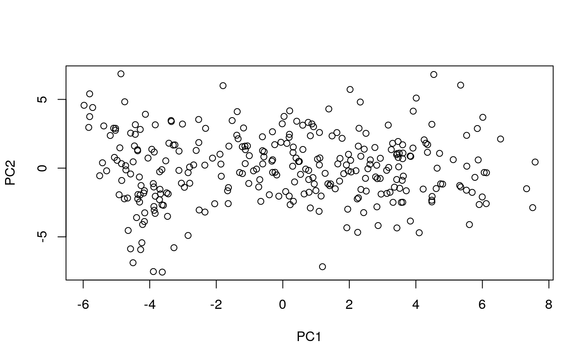
Each point is a sample. It is not immediately clear what the meaning of PC1 (or PC2) is and we see a wide spectrum of variation among samples. COCOA will help us understand the biological meaning of the PCs.
After the PCA, you might want to look at plots of the first few PCs and consider removing extreme outliers and rerunning the PCA since PCA can be affected by outliers, although this depends on your analysis. We note that COCOA will still work even if there are not distinct clusters of samples in your PCA plot and if you do not have known groups of samples. In this vignette, we will look at principal components 1-4 but this choice also depends on the context of your analysis.
We treat the PC scores as our “target variables” for this analysis and calculate the correlation between the DNA methylation level of each CpG and each PC.
PCsToAnnotate <- paste0("PC", 1:4) targetVar <- pcScores[, PCsToAnnotate] targetVar <- as.matrix(scale(targetVar, center=TRUE, scale=FALSE)) methylCor <- cor(t(brcaMethylData1), targetVar, use = "pairwise.complete.obs") ## if the standard deviation of the methylation level ## for a CpG across samples is 0, ## cor() will return NA, so manually set the correlation to 0 for these CpGs methylCor[is.na(methylCor)] <- 0
Score region sets
Let’s put our region sets into one object to simplify the next steps of the analysis.
## prepare data GRList <- GRangesList(esr1_chr1, gata3_chr1, nrf1_chr1, atf3_chr1) regionSetNames <- c("esr1_chr1", "gata3_chr1", "nrf1_chr1", "atf3_chr1")
Now let’s give each region set a score with aggregateSignalGRList() to quantify how much it is associated with each principal component:
regionSetScores <- aggregateSignalGRList(signal=methylCor, signalCoord=brcaMCoord1, GRList=GRList, signalCol=PCsToAnnotate, scoringMetric="default") regionSetScores$regionSetName <- regionSetNames regionSetScores
## PC1 PC2 PC3 PC4 signalCoverage regionSetCoverage
## 1 0.40626294 0.2790623 0.19914102 0.11770782 440 216
## 2 0.52578555 0.2718046 0.18056909 0.10463801 45 39
## 3 0.06974181 0.1061399 0.08018811 0.05219728 484 145
## 4 0.08536608 0.1053894 0.07422950 0.05996384 296 88
## totalRegionNumber meanRegionSize regionSetName
## 1 765 1196.2 esr1_chr1
## 2 559 494.6 gata3_chr1
## 3 163 273.4 nrf1_chr1
## 4 116 283.4 atf3_chr1Now we have a score for each region set that represents how much epigenetic variation in that region set is associated with each PC. Since we are using the absolute value of the correlation coefficient for each CpG to score our region sets, the possible region set scores range from 0 to 1, with 0 representing no correlation and 1 representing complete correlation. From our initial results, it appears that the DNA methylation in ER and GATA3 region sets is more highly associated with the PC scores than the DNA methylation in the NRF1 and ATF3 region sets is. Out of PCs 1-4, ER and GATA3 have the highest scores for PC1. This result makes sense when we visualize ER status on the PCA plot. As you can see in the figure below, PC1 separates samples pretty well based on ER status (even though ER status was not used when doing the PCA).
annoPCScores <- data.frame(pcScores, ER_status=as.factor(brcaMetadata[row.names(pcScores), "ER_status"])) ggplot(data = annoPCScores, mapping = aes(x=PC1, y=PC2, col=ER_status)) + geom_point() + ggtitle("PCA of a subset of DNA methylation data from breast cancer patients") + theme_classic()
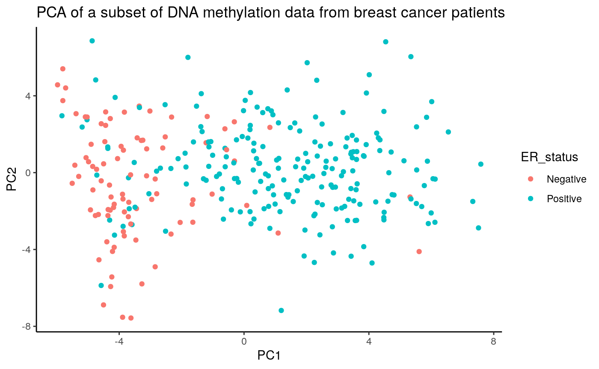
As an easy way to visualize how the region sets are ranked for each PC, we can use rsScoreHeatmap:
rsScoreHeatmap(regionSetScores, signalCol=paste0("PC", 1:4), rsNameCol = "regionSetName", orderByCol = "PC1", column_title = "Region sets ordered by score for PC1")
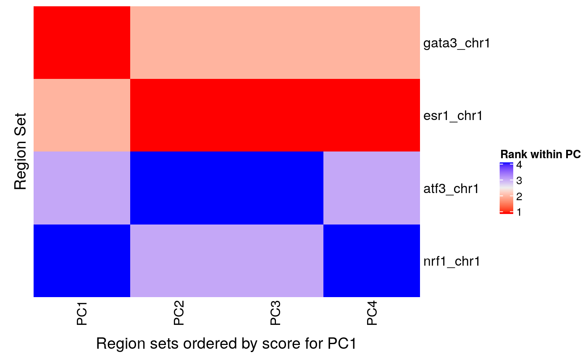
We can see that GATA3 had the highest score for PC 1 but that ESR1 had a higher score for PCs 2, 3, and 4. If you want to arrange the heatmap by region set scores for another PC, just change the orderByCol parameter like so:
rsScoreHeatmap(regionSetScores, signalCol=paste0("PC", 1:4), rsNameCol = "regionSetName", orderByCol = "PC2", column_title = "Region sets ordered by score for PC2")
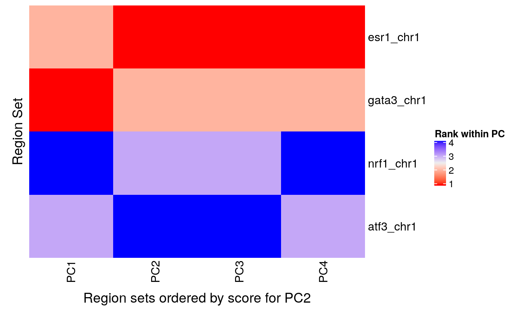
Estimating statistical significance
Now that we have a score for each region set for each PC, we can to get an idea of the statistical significance of these results. We will do this using a permutation test. The permutation test is computationally expensive and, in some cases, may not be needed since the COCOA scores by themselves might be enough to gain insight your data. However, if a p-value estimate is desired, the permutation test can return that.
Permutations
By shuffling the target variable and calculating COCOA scores, we can create a null distribution for each region set. The runCOCOA function does the two main COCOA steps: quantifying the variation and scoring the region sets. If the samples were in the correct order, runCOCOA would return the real COCOA scores but since we are giving a shuffled sample order (sampleOrder parameter), we will be correlating the epigenetic data with the shuffled sample target variables to create null distribution COCOA scores. We will be running five permutations for the vignette but many more should be done for a real analysis (probably at least a few hundred). We need to set the seed for reproducible results since we are doing random shuffling of the samples’ target variables.
set.seed(100) nPerm <- 5 permRSScores <- list() for (i in 1:nPerm) { # shuffling sample labels sampleOrder <- sample(1:nrow(targetVar), nrow(targetVar)) permRSScores[[i]] <- runCOCOA(sampleOrder=sampleOrder, genomicSignal=brcaMethylData1, signalCoord=brcaMCoord1, GRList=GRList, signalCol=PCsToAnnotate, targetVar=targetVar, variationMetric="cor") permRSScores[[i]]$regionSetName <- regionSetNames } permRSScores[1:3]
## [[1]]
## PC1 PC2 PC3 PC4 signalCoverage regionSetCoverage
## 1 0.04232757 0.05649894 0.04342768 0.04626163 440 216
## 2 0.04380011 0.07159109 0.03308962 0.05669989 45 39
## 3 0.04572631 0.04149231 0.03839833 0.05240461 484 145
## 4 0.04366024 0.04813378 0.04145671 0.04726792 296 88
## totalRegionNumber meanRegionSize regionSetName
## 1 765 1196.2 esr1_chr1
## 2 559 494.6 gata3_chr1
## 3 163 273.4 nrf1_chr1
## 4 116 283.4 atf3_chr1
##
## [[2]]
## PC1 PC2 PC3 PC4 signalCoverage regionSetCoverage
## 1 0.05752152 0.05403869 0.03890252 0.04563346 440 216
## 2 0.07630578 0.06435640 0.03113904 0.04759391 45 39
## 3 0.04073737 0.05984777 0.03545417 0.04317463 484 145
## 4 0.04337706 0.05373725 0.04054879 0.04464767 296 88
## totalRegionNumber meanRegionSize regionSetName
## 1 765 1196.2 esr1_chr1
## 2 559 494.6 gata3_chr1
## 3 163 273.4 nrf1_chr1
## 4 116 283.4 atf3_chr1
##
## [[3]]
## PC1 PC2 PC3 PC4 signalCoverage regionSetCoverage
## 1 0.03614938 0.06489608 0.03899127 0.03493792 440 216
## 2 0.03629086 0.08373848 0.03107857 0.03403492 45 39
## 3 0.04604893 0.04033243 0.04366153 0.05758694 484 145
## 4 0.04989446 0.04392751 0.04359956 0.05716490 296 88
## totalRegionNumber meanRegionSize regionSetName
## 1 765 1196.2 esr1_chr1
## 2 559 494.6 gata3_chr1
## 3 163 273.4 nrf1_chr1
## 4 116 283.4 atf3_chr1We now have a list where each item is a result of aggregateSignalGRList. We have nPerm list items in permRSScores (only showing 3 above). We’ll reformat it so that we have a list where each item is a null distribution for a single region set:
nullDistList <- convertToFromNullDist(permRSScores) names(nullDistList) <- regionSetNames nullDistList
## $esr1_chr1
## PC1 PC2 PC3 PC4 signalCoverage regionSetCoverage
## 1 0.04232757 0.05649894 0.04342768 0.04626163 440 216
## 2 0.05752152 0.05403869 0.03890252 0.04563346 440 216
## 3 0.03614938 0.06489608 0.03899127 0.03493792 440 216
## 4 0.03842915 0.04565726 0.05148263 0.04698695 440 216
## 5 0.05020637 0.03714279 0.03826474 0.06167740 440 216
## totalRegionNumber meanRegionSize regionSetName
## 1 765 1196.2 esr1_chr1
## 2 765 1196.2 esr1_chr1
## 3 765 1196.2 esr1_chr1
## 4 765 1196.2 esr1_chr1
## 5 765 1196.2 esr1_chr1
##
## $gata3_chr1
## PC1 PC2 PC3 PC4 signalCoverage regionSetCoverage
## 1 0.04380011 0.07159109 0.03308962 0.05669989 45 39
## 2 0.07630578 0.06435640 0.03113904 0.04759391 45 39
## 3 0.03629086 0.08373848 0.03107857 0.03403492 45 39
## 4 0.03797217 0.04425419 0.05317747 0.04748458 45 39
## 5 0.04797976 0.03215696 0.03956496 0.07057877 45 39
## totalRegionNumber meanRegionSize regionSetName
## 1 559 494.6 gata3_chr1
## 2 559 494.6 gata3_chr1
## 3 559 494.6 gata3_chr1
## 4 559 494.6 gata3_chr1
## 5 559 494.6 gata3_chr1
##
## $nrf1_chr1
## PC1 PC2 PC3 PC4 signalCoverage regionSetCoverage
## 1 0.04572631 0.04149231 0.03839833 0.05240461 484 145
## 2 0.04073737 0.05984777 0.03545417 0.04317463 484 145
## 3 0.04604893 0.04033243 0.04366153 0.05758694 484 145
## 4 0.03674500 0.05831681 0.03917128 0.04565591 484 145
## 5 0.04025093 0.05199685 0.04317510 0.05042935 484 145
## totalRegionNumber meanRegionSize regionSetName
## 1 163 273.4 nrf1_chr1
## 2 163 273.4 nrf1_chr1
## 3 163 273.4 nrf1_chr1
## 4 163 273.4 nrf1_chr1
## 5 163 273.4 nrf1_chr1
##
## $atf3_chr1
## PC1 PC2 PC3 PC4 signalCoverage regionSetCoverage
## 1 0.04366024 0.04813378 0.04145671 0.04726792 296 88
## 2 0.04337706 0.05373725 0.04054879 0.04464767 296 88
## 3 0.04989446 0.04392751 0.04359956 0.05716490 296 88
## 4 0.03665362 0.06067492 0.04305764 0.04679636 296 88
## 5 0.04242261 0.04895518 0.04249563 0.04491244 296 88
## totalRegionNumber meanRegionSize regionSetName
## 1 116 283.4 atf3_chr1
## 2 116 283.4 atf3_chr1
## 3 116 283.4 atf3_chr1
## 4 116 283.4 atf3_chr1
## 5 116 283.4 atf3_chr1We have four null distributions, one for each region set in GRList.
Fit gamma distribution to null distributions and get p-values
To reduce the number of permutations (and the run time for COCOA), we will approximate each null distribution with a gamma distribution (Winkler et al., 2016). After fitting the gamma distribution to each null distribution, we can use the gamma distributions to get p-values. We fit the gamma distribution and get the p-value with getGammaPVal.
## p-values based on fitted gamma distributions gPValDF <- getGammaPVal(rsScores = regionSetScores, nullDistList = nullDistList, signalCol = PCsToAnnotate, method = "mme", realScoreInDist = TRUE) gPValDF <- cbind(gPValDF, regionSetScores[, colnames(regionSetScores)[!(colnames(regionSetScores) %in% PCsToAnnotate)]]) gPValDF <- cbind(gPValDF, regionSetNames) gPValDF
## PC1 PC2 PC3 PC4 signalCoverage regionSetCoverage
## 1 0.04117168 0.03929232 0.03797392 0.03391488 440 216
## 2 0.04152411 0.03975727 0.03886847 0.04152703 45 39
## 3 0.02664265 0.03301365 0.02716647 0.32974132 484 145
## 4 0.02815471 0.02932879 0.02323019 0.05943691 296 88
## totalRegionNumber meanRegionSize regionSetName regionSetNames
## 1 765 1196.2 esr1_chr1 esr1_chr1
## 2 559 494.6 gata3_chr1 gata3_chr1
## 3 163 273.4 nrf1_chr1 nrf1_chr1
## 4 116 283.4 atf3_chr1 atf3_chr1You might find it surprising that the p-values of NRF1 and ATF3 are lower than those of ER and GATA3. Keep in mind that a low p-value does not necessarily indicate a large effect size. The actual COCOA scores for ER and GATA3 were much larger than those of NRF1 and ATF3, even if NRF1 and ATF3 might have lower p-values.
After getting p-values, we also want to do multiple testing correction to account for the number of region sets in our region set database (not shown here but see ?p.adjust).
We can also use the null distributions to directly calculate empirical p-values:
getPermStat(rsScores = regionSetScores, nullDistList = nullDistList, signalCol = PCsToAnnotate)
## PC1 PC2 PC3 PC4 signalCoverage regionSetCoverage totalRegionNumber
## 1: 0 0 0 0.0 440 216 765
## 2: 0 0 0 0.0 45 39 559
## 3: 0 0 0 0.4 484 145 163
## 4: 0 0 0 0.0 296 88 116
## meanRegionSize regionSetName
## 1: 1196.2 esr1_chr1
## 2: 494.6 gata3_chr1
## 3: 273.4 nrf1_chr1
## 4: 283.4 atf3_chr1An empirical p-value of zero is returned when the real region set score was more extreme than any scores in its null distribution. What this really suggests is that the true p-value is less than ( 1/nPerm ) although it is unclear how much less.
The empirical p-values are limited by the number of permutations done. When multiple testing correction is done to correct for testing many region sets in a large region set database, the empirical test normally cannot achieve significant p-values with a reasonable number of permutations. For that reason, the gamma distribution approximation is recommended to allow the possibility of lower p-values.
Further understanding the results (visualization)
We can further understand the variability in these region sets in several ways:
- Look at whether variability is specific to the regions of interest compared to the genome around these regions.
- Visualize the epigenetic signal in these regions and whether it correlates with the target variable.
- Look at the feature contribution scores (e.g. correlation coefficients) in each region of a given region set to see whether all regions have high contribution scores or just a subset the regions. Also we can see if the same regions have high contribution scores for multiple target variables.
To demonstrate these techniques, we’ll be using results from the unsupervised analysis above.
Specificity of variation to the regions of interest
We can see whether variability associated with the target variable is specific to the region of interest by comparing the region of interest to the surrounding genome. To do this, we will calculate the average feature contribution scores (FCS) of a wide area surrounding the regions of interest (14 kb centered on each region set region).
wideGRList <- lapply(GRList, resize, width=14000, fix="center") fcsProfile <- lapply(wideGRList, function(x) getMetaRegionProfile(signal=methylCor, signalCoord=brcaMCoord1, regionSet=x, signalCol=PCsToAnnotate, binNum=21))
We will normalize the result for each PC so we can better compare them. Here we normalize by subtracting the mean absolute FCS of all epigenetic features for each PC from the region set profiles for the corresponding PC. Then we get the plot scale so we can easily compare the different profiles. These normalization steps are helpful for comparing the meta-region profiles but not necessarily required so it’s not essential that you understand the below code.
## average FCS from each PC to normalize so PCs can be compared with each other avFCS <- apply(X=methylCor[, PCsToAnnotate], MARGIN=2, FUN=function(x) mean(abs(x))) ## normalize fcsProfile <- lapply(fcsProfile, FUN=function(x) as.data.frame(mapply(FUN = function(y, z) x[, y] - z, y=PCsToAnnotate, z=avFCS))) binID = 1:nrow(fcsProfile[[1]]) fcsProfile <- lapply(fcsProfile, FUN=function(x) cbind(binID, x)) ## for the plot scale maxVal <- max(sapply(fcsProfile, FUN=function(x) max(x[, PCsToAnnotate]))) minVal <- min(sapply(fcsProfile, FUN=function(x) min(x[, PCsToAnnotate]))) ## convert to long format for plots fcsProfile <- lapply(X=fcsProfile, FUN=function(x) tidyr::gather(data=x, key="PC", value="meanFCS", PCsToAnnotate)) fcsProfile <- lapply(fcsProfile, function(x){x$PC <- factor(x$PC, levels=PCsToAnnotate); return(x)})
Let’s look at the plots!
wrapper <- function(x, ...) paste(strwrap(x, ...), collapse="\n") profilePList <- list() for (i in seq_along(fcsProfile)) { thisRS <- fcsProfile[[i]] profilePList[[i]] <- ggplot(data=thisRS, mapping=aes(x=binID , y=meanFCS)) + geom_line() + ylim(c(minVal, maxVal)) + facet_wrap(facets="PC") + ggtitle(label=wrapper(regionSetNames[i], width=30)) + xlab("Genome around region set, 14 kb") + ylab("Normalized mean FCS") + theme(panel.grid.major.x=element_blank(), panel.grid.minor.x=element_blank(), axis.text.x=element_blank(), axis.ticks.x=element_blank()) profilePList[[i]] } profilePList[[1]]
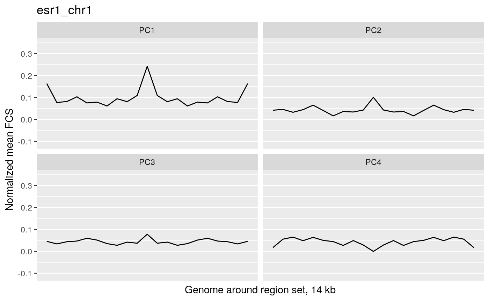
profilePList[[2]]
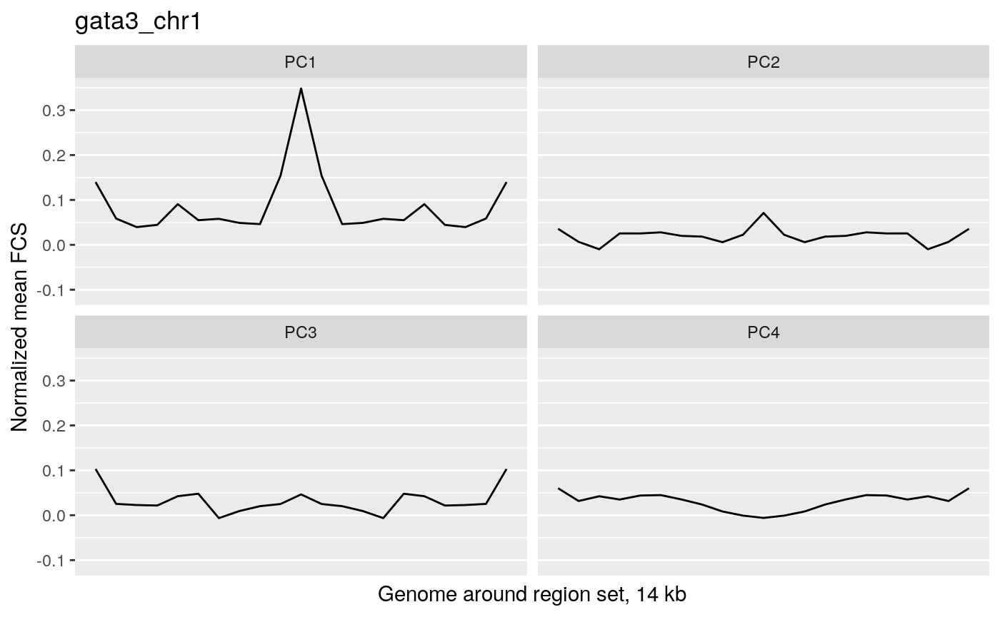
profilePList[[3]]
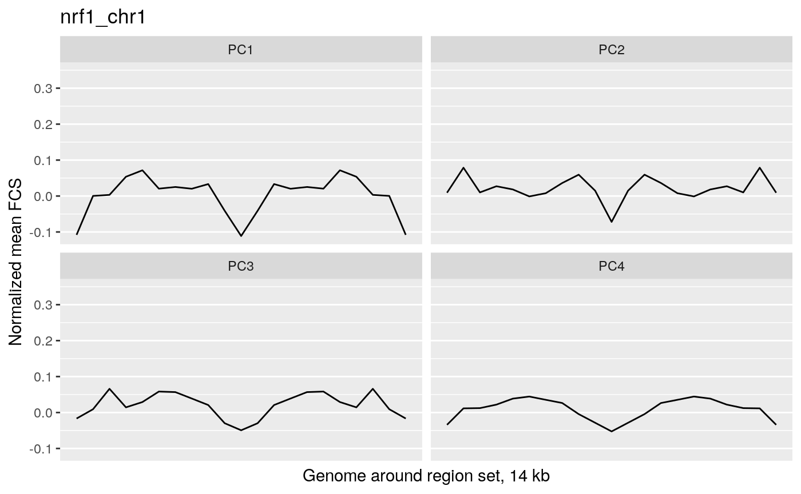
profilePList[[4]]
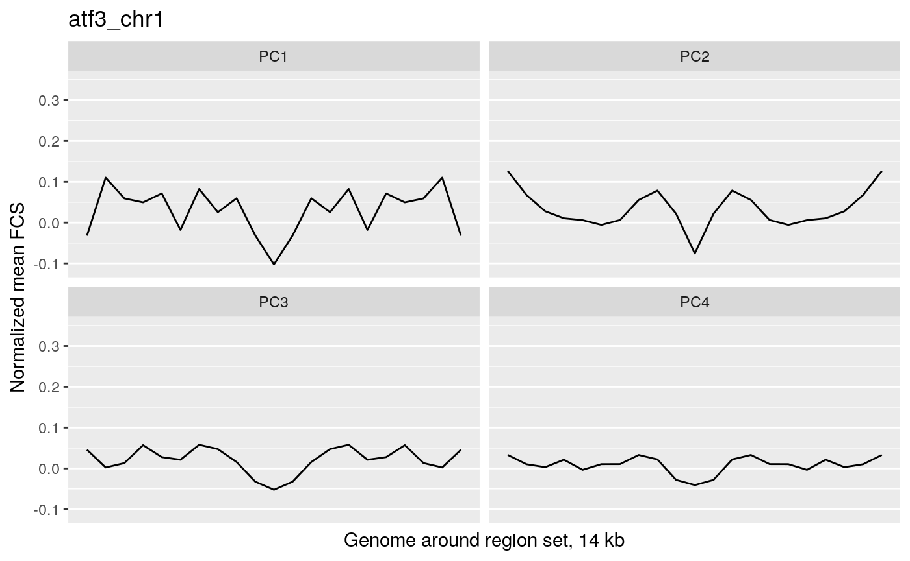
These plots show the average magnitude of the feature contribution scores in the genome around and including the regions of interest. The FCS for an input epigenetic feature, indicates how much that input feature varies in the same direction as the target variable (here, the PC scores). If you used correlation or covariation to get the feature contribution scores, a peak in the middle of the profile indicates that there is increased covariation in the regions of interest compared to the surrounding genome. It suggests that those regions are changing in a coordinated way whereas the surrounding genome is not changing in a coordinated way to the same extent. A peak suggests that the variation in the target variable (the PCs) may be somehow specifically related to the region set although it is not clear whether the region set is causally linked to the variation or just affected by other things that are causing the variation associated with the target variable. Some region sets may have an increased FCS but no peak, for example, some histone modification region sets like H3K27me3 or H3K9me3. This doesn’t necessarily mean these regions are not relevant. It could just mean that there is variability in larger blocks of the genome around these histone modifications (the expanded regions might also overlap with each other). For details on how the meta-region profile was created, check out the section about it in the “Method details” section of this vignette or see the docs for getMetaRegionProfile with ?COCOA::getMetaRegionProfile.
These plots show that ESR1 and GATA3 binding regions demonstrate higher covariation along the PC1 axis than the surrounding genome does (because they have a peak in the middle) while NRF1 and ATF3 do not. So for example, if you line up samples by their PC1 score, then as you go from low to high PC1 score, the DNA methylation of ESR1 binding regions will generally change in a coordinated way across samples (PCs are based on covariation) but the DNA methylation in the surrounding genome would not change as much or would not change in a coordinated way. The results from our four region sets suggest that ESR1 and GATA3 regions specifically contribute to the variation along the PC 1 (as well as perhaps other PCs), helping us understand the biological meaning of the variation captured by those PCs: at least in part related to estrogen receptor.
The raw data
If a region set has a high score for a certain target variable, we would expect that the epigenetic signal in at least some of those regions would correlate with the target variable. In other words, as you go from a high value of the target variable to a low value of the target variable, in this case as you go along the PC axis, the epigenetic signal will either go up or down. Let’s look at the epigenetic signal in ESR1 regions. In the following plot, each column is a CpG in an ESR1 region and each row is a patient. We’re only showing the 100 CpGs with the highest feature contribution scores but you can adjust or remove the topXVariables parameter to visualize more CpGs. Patients are ordered by their PC score for PC1.
signalAlongAxis(genomicSignal=brcaMethylData1, signalCoord=brcaMCoord1, regionSet=esr1_chr1, sampleScores=pcScores, topXVariables = 100, variableScores = abs(methylCor[, "PC1"]), orderByCol="PC1", cluster_columns=TRUE, column_title = "Individual cytosine/CpG", name = "DNA methylation level", show_row_names=FALSE)
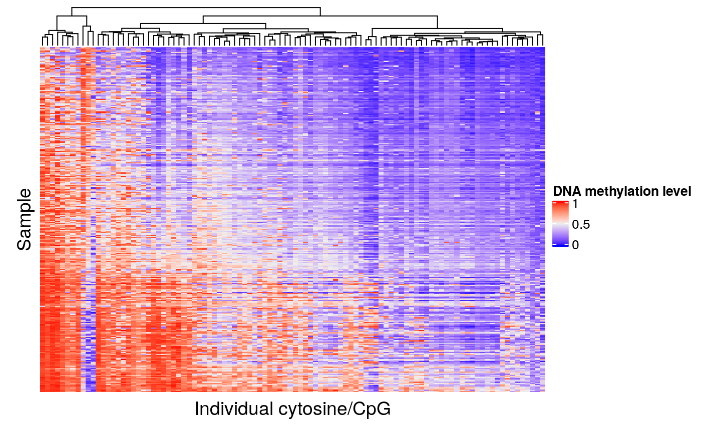
The CpGs that show high variation along the PC axis are the ones that contribute to the ESR1 region set being ranked highly in our analysis.
Now let’s look at one of the region sets, NRF1, that had a lower score for PC1:
signalAlongAxis(genomicSignal=brcaMethylData1, signalCoord=brcaMCoord1, regionSet=nrf1_chr1, sampleScores=pcScores, topXVariables = 100, variableScores = abs(methylCor[, "PC1"]), orderByCol="PC1", cluster_columns=TRUE, column_title = "Individual cytosine/CpG", name = "DNA methylation level", show_row_names=FALSE)
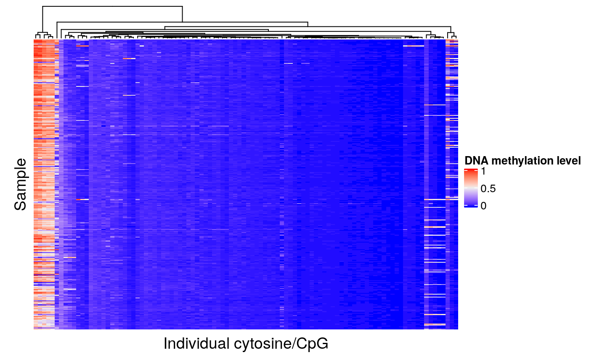
When patients are ordered according to PC1 score, we can see that there is very little covariation of the epigenetic signal in these regions. Therefore, it is not surprising that the NRF1 region set had a low score for this PC.
Since COCOA ranks region sets based on their relative scores in comparison to other region sets tested, there will always be a region set with a best score. The permutation test gives an idea of statistical significance but not necessarily effect size. The actual COCOA scores give an idea of the magnitude of variation of a region set but it can be a good idea to also visually check the raw genomic signal in your top region sets to see how great the extent of variation is along the PC.
Feature contribution scores of individual regions
This plot can help you learn more about the contribution of individual region set regions to the region set score for each target variable. For example, if the estrogen receptor region set was associated with PCs 1, 3, and 4, we might wonder whether the same regions are causing the association with these PCs or whether different regions are associated with each PC. To do this, we will first calculate the average absolute feature contribution score for each region in a region set (obtained by averaging a given target variable’s FCS for epigenetic features that overlap that region). Then we can use the distribution of FCS for each target variable to convert each region’s FCS to a percentile to see how extreme/high that region is for each target variable. Let’s look at the plot for estrogen receptor:
regionQuantileByTargetVar(signal = methylCor, signalCoord = brcaMCoord1, regionSet = esr1_chr1, rsName = "Estrogen receptor (chr1)", signalCol=paste0("PC", 1:4), maxRegionsToPlot = 8000, cluster_rows = TRUE, cluster_columns = FALSE, column_title = rsName, name = "Percentile of feature contribution scores in PC")
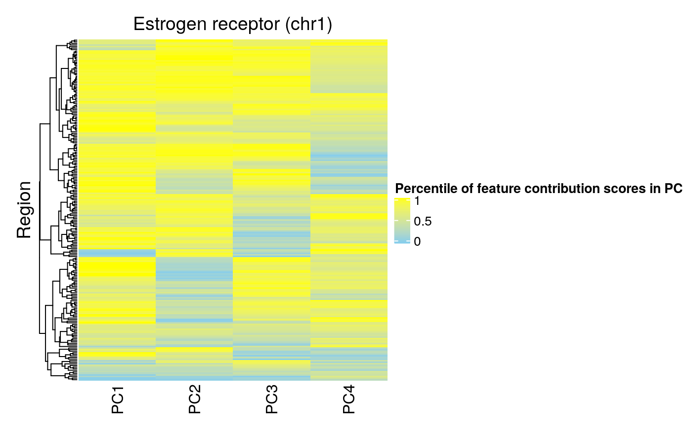
We can see that some of the same regions have high FCS for multiple PCs (i.e. these regions are important for these PCs). Also, there are some regions that do not have high FCS for PCs 1-3, suggesting that these regions are not associated with the largest sources of covariation in the data. Overall, PC1 has the highest FCS, consistent with our meta-region profiles (highest peak for PC1).
For contrast, we can look at the regions of NRF1:
regionQuantileByTargetVar(signal = methylCor, signalCoord = brcaMCoord1, regionSet = nrf1_chr1, rsName = "NRF1 (chr1)", signalCol=paste0("PC", 1:4), maxRegionsToPlot = 8000, cluster_rows = TRUE, cluster_columns = FALSE, column_title = rsName, name = "Percentile of feature contribution scores in PC")
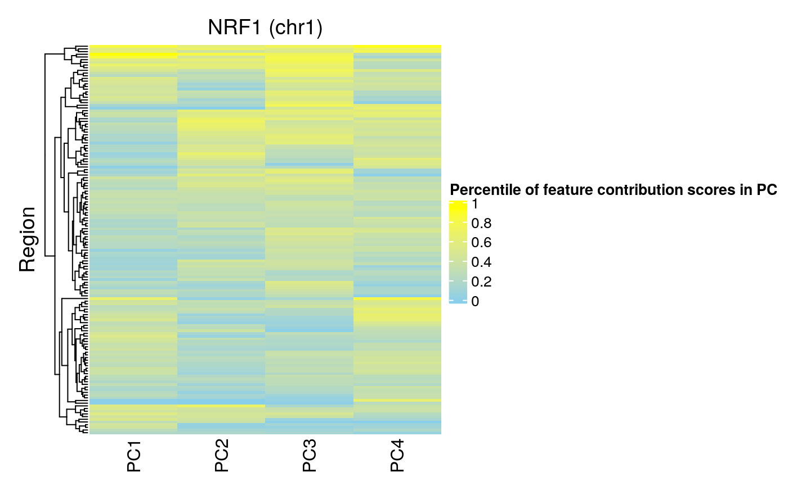
We can see that fewer regions in the NRF1 region set have high FCS for PCs 1-4. This is consistent with this region set being ranked lower by COCOA for association with these PCs.
COCOA for chromatin accessibility data (ATAC-seq)
COCOA uses a database of region sets to annotate inter-sample epigenetic variation in your data. In this vignette, we will see how COCOA can find meaningful sources of chromatin accessibility variation in breast cancer patients.
First, we will show how to use COCOA to find region sets where chromatin accessibility variation is associated with variation in a phenotype of interest (the target variable) (Supervised COCOA). Then, we will show how to find region sets that are associated with the principal components of PCA of our chromatin accessibility data (Unsupervised COCOA).
Our data
We will use chromatin accessibility data (ATAC-seq) from breast cancer patients from The Cancer Genome Atlas (TCGA-BRCA) from Corces et al., 2018. We have a matrix of counts in peak regions for each sample. We (the authors) have subsetted this data to a small number of peak regions that we determined were necessary for the vignette in order to keep the vignette data small. Since we’re using only a small subset of the data, the vignette results may not necessarily be generalizable to the full data. In your real analysis, we recommend using as many ATAC-seq regions as possible. We selected two region sets for this vignette that we expected to show variation in chromatin accessibility between breast cancer patients and two region sets that we expected to not show variation. Those region sets are transcription factor binding regions from ChIP-seq experiments (with the same reference genome as our breast cancer data): ESR1 in MCF-7 cells, GATA3 in MCF-7 cells, NRF1 in HepG2 cells, and Atf1 in K562 cells. Only chr1 regions are included in the vignette. For a real analysis, we recommend using hundreds or thousands of region sets. For sources of region sets, see the “Region set database” section.
Supervised COCOA
Goal: Understand epigenetic variation related to a specific phenotype
In a supervised COCOA analysis, we want to annotate epigenetic variation that is related to variation in one or more sample phenotypes. These sample phenotypes could be molecular (e.g. expression of a protein marker, presence/variant allele frequency of a mutation, or expression of a certain gene). The sample phenotypes can also be higher-level organism phenotypes (e.g. patient survival, cancer stage, disease severity). COCOA will identify region sets where the epigenetic signal is most related to the phenotype. These region sets then can help to understand the relationship between the phenotype and epigenetic state.
Vignette analysis goal: As mentioned previously, we are looking at chromatin accessibility data in breast cancer patients. Our goal is to understand epigenetic variation related to our phenotype of interest, estrogen receptor (ER) status.
Quantify relationship between chosen sample phenotype and epigenetic data
First we will load the necessary data: BRCA chromatin accessibility data with genomic coordinates, region sets to test, and our phenotype of interest, ER status (part of brcaMetadata).
library(COCOA) data("esr1_chr1") data("gata3_chr1") data("nrf1_chr1") data("atf3_chr1") data("brcaATACCoord1") data("brcaATACData1") data("brcaMetadata")
As mentioned, ER status is our target phenotype so we’ll pull that info out of the patient metadata. Since we only have one target variable, we are keeping the data as a data.frame object using drop=FALSE (instead of targetVarDF becoming a vector).
myPhen <- "ER_status" targetVarDF <- brcaMetadata[colnames(brcaATACData1), myPhen, drop=FALSE]
Let’s convert estrogen receptor status to a number so we can do calculations with it. Then we will quantify the association between ER status and the ATAC-seq counts in each peak region using Pearson correlation.
targetVarDF$ER_status <- scale(as.numeric(targetVarDF$ER_status), center=TRUE, scale=FALSE) atacCor <- cor(t(brcaATACData1), targetVarDF$ER_status, use = "pairwise.complete.obs") ## if the standard deviation of the epigenetic signal ## for a peak region across samples is 0, ## cor() will return NA, so manually set the correlation to 0 for these regions atacCor[is.na(atacCor)] <- 0 colnames(atacCor) <- myPhen
Now we have a feature contribution score (the correlation coefficient in this case) for each peak region that represents how much the accessibility at that site is associated with ER status. We can use those individual peak region scores to score reference region sets from our region set database. We’ll score our region sets with the aggregateSignalGRList function.
Score region sets
GRList <- GRangesList(esr1_chr1, gata3_chr1, atf3_chr1, nrf1_chr1) regionSetNames <- c("ESR1", "GATA3", "ATF3", "NRF1") rsScores <- aggregateSignalGRList(signal=atacCor, signalCoord=brcaATACCoord1, GRList=GRList, signalCol=myPhen, scoringMetric="default", absVal=TRUE) rsScores$regionSetName <- regionSetNames rsScores
## ER_status signalCoverage regionSetCoverage totalRegionNumber meanRegionSize
## 1 0.1960195 941 616 765 1196.2
## 2 0.1820518 365 343 559 494.6
## 3 0.1731727 106 101 116 283.4
## 4 0.1918067 164 158 163 273.4
## sumProportionOverlap regionSetName
## 1 332.23314 ESR1
## 2 274.30255 GATA3
## 3 94.34211 ATF3
## 4 150.78261 NRF1Now we have a score for each region set that represents how much epigenetic variation in that region set is associated with the phenotype of interest, ER status. Since we are using the absolute value of the correlation coefficient for each peak region to score our region sets, the possible region set scores range from 0 to 1, with 0 representing no correlation and 1 representing complete correlation. From our initial results, it appears that there is not much difference in the chromatin accessibility associated with ER status in the ER and GATA3 region sets compared to the NRF1 and ATF3 region sets. While this is a little unexpected (we would expect chromatin accessibility in ER and GATA3 region sets to be associated with ER status), we hypothesize that this might be because the clinical ER+/- designation does not accurately represent the molecular phenotype of some samples. This hypothesis is based on our unsupervised analysis where some ER- samples cluster with the ER+ samples and vice versa so you can check that out if you are curious.
Both the correlation and scoring steps can be combined into one step with the runCOCOA function as will be shown in the next section.
Estimating statistical significance
Now that we have a score for each region set, we can to get an idea of the statistical significance of these results. We will do this using a permutation test. The permutation test is computationally expensive and, in some cases, may not be needed since the COCOA scores by themselves might be enough to gain insight your data. However, if a p-value estimate is desired, the permutation test can return that.
Permutations
By shuffling the sample phenotypes and calculating fake COCOA scores, we can create a null distribution for each region set. The runCOCOA function does the two main COCOA steps: quantifying the variation and scoring the region sets. If the samples were in the correct order, runCOCOA would return the real COCOA scores but since we are giving a shuffled sample order (sampleOrder parameter), we will be correlating the epigenetic data with the shuffled sample phenotypes to create null distribution COCOA scores. We will be running five permutations for the vignette but many more should be done for a real analysis (probably at least a few hundred). We need to set the seed for reproducible results since we are doing random shuffling of the sample phenotypes.
set.seed(100) nPerm <- 5 permRSScores <- list() for (i in 1:nPerm) { # shuffling sample labels sampleOrder <- sample(1:nrow(targetVarDF), nrow(targetVarDF)) permRSScores[[i]] <- runCOCOA(sampleOrder=sampleOrder, genomicSignal=brcaATACData1, signalCoord=brcaATACCoord1, GRList=GRList, signalCol=myPhen, targetVar=targetVarDF, variationMetric="cor") permRSScores[[i]]$regionSetName <- regionSetNames } permRSScores[1:3]
## [[1]]
## ER_status signalCoverage regionSetCoverage totalRegionNumber meanRegionSize
## 1 0.2229382 941 616 765 1196.2
## 2 0.2151390 365 343 559 494.6
## 3 0.1600926 106 101 116 283.4
## 4 0.1724614 164 158 163 273.4
## sumProportionOverlap regionSetName
## 1 332.23314 ESR1
## 2 274.30255 GATA3
## 3 94.34211 ATF3
## 4 150.78261 NRF1
##
## [[2]]
## ER_status signalCoverage regionSetCoverage totalRegionNumber meanRegionSize
## 1 0.09891451 941 616 765 1196.2
## 2 0.09524367 365 343 559 494.6
## 3 0.10498697 106 101 116 283.4
## 4 0.10763922 164 158 163 273.4
## sumProportionOverlap regionSetName
## 1 332.23314 ESR1
## 2 274.30255 GATA3
## 3 94.34211 ATF3
## 4 150.78261 NRF1
##
## [[3]]
## ER_status signalCoverage regionSetCoverage totalRegionNumber meanRegionSize
## 1 0.1750148 941 616 765 1196.2
## 2 0.1508925 365 343 559 494.6
## 3 0.2202439 106 101 116 283.4
## 4 0.1694944 164 158 163 273.4
## sumProportionOverlap regionSetName
## 1 332.23314 ESR1
## 2 274.30255 GATA3
## 3 94.34211 ATF3
## 4 150.78261 NRF1We now have a list where each item is a result of aggregateSignalGRList for a permutation of the sample phenotypes. We have nPerm list items in permRSScores (only showing 3 above). We’ll reformat it so that we have a list where each item is a null distribution for a single region set:
nullDistList <- convertToFromNullDist(permRSScores) names(nullDistList) <- regionSetNames nullDistList
## $ESR1
## ER_status signalCoverage regionSetCoverage totalRegionNumber meanRegionSize
## 1 0.22293823 941 616 765 1196.2
## 2 0.09891451 941 616 765 1196.2
## 3 0.17501477 941 616 765 1196.2
## 4 0.12634695 941 616 765 1196.2
## 5 0.10401509 941 616 765 1196.2
## sumProportionOverlap regionSetName
## 1 332.2331 ESR1
## 2 332.2331 ESR1
## 3 332.2331 ESR1
## 4 332.2331 ESR1
## 5 332.2331 ESR1
##
## $GATA3
## ER_status signalCoverage regionSetCoverage totalRegionNumber meanRegionSize
## 1 0.21513898 365 343 559 494.6
## 2 0.09524367 365 343 559 494.6
## 3 0.15089247 365 343 559 494.6
## 4 0.12828632 365 343 559 494.6
## 5 0.10449557 365 343 559 494.6
## sumProportionOverlap regionSetName
## 1 274.3025 GATA3
## 2 274.3025 GATA3
## 3 274.3025 GATA3
## 4 274.3025 GATA3
## 5 274.3025 GATA3
##
## $ATF3
## ER_status signalCoverage regionSetCoverage totalRegionNumber meanRegionSize
## 1 0.1600926 106 101 116 283.4
## 2 0.1049870 106 101 116 283.4
## 3 0.2202439 106 101 116 283.4
## 4 0.2567416 106 101 116 283.4
## 5 0.1158530 106 101 116 283.4
## sumProportionOverlap regionSetName
## 1 94.34211 ATF3
## 2 94.34211 ATF3
## 3 94.34211 ATF3
## 4 94.34211 ATF3
## 5 94.34211 ATF3
##
## $NRF1
## ER_status signalCoverage regionSetCoverage totalRegionNumber meanRegionSize
## 1 0.1724614 164 158 163 273.4
## 2 0.1076392 164 158 163 273.4
## 3 0.1694944 164 158 163 273.4
## 4 0.2326390 164 158 163 273.4
## 5 0.1291115 164 158 163 273.4
## sumProportionOverlap regionSetName
## 1 150.7826 NRF1
## 2 150.7826 NRF1
## 3 150.7826 NRF1
## 4 150.7826 NRF1
## 5 150.7826 NRF1We have four null distributions, one for each region set in GRList.
Fit gamma distribution to null distributions and get p-values
To reduce the number of permutations (and the run time for COCOA), we will approximate each null distribution with a gamma distribution (Winkler et al., 2016). After fitting the gamma distribution to each null distribution, we can use the gamma distributions to get p-values. We fit the gamma distribution and get the p-value with getGammaPVal.
## p-values based on fitted gamma distributions gPValDF <- getGammaPVal(rsScores = rsScores, nullDistList = nullDistList, signalCol = myPhen, method = "mme", realScoreInDist = TRUE) gPValDF <- cbind(gPValDF, rsScores[, colnames(rsScores)[!(colnames(rsScores) %in% myPhen)]]) gPValDF <- cbind(gPValDF, regionSetNames) gPValDF
## ER_status signalCoverage regionSetCoverage totalRegionNumber meanRegionSize
## 1 0.1773110 941 616 765 1196.2
## 2 0.1878201 365 343 559 494.6
## 3 0.4487149 106 101 116 283.4
## 4 0.2551954 164 158 163 273.4
## sumProportionOverlap regionSetName regionSetNames
## 1 332.23314 ESR1 ESR1
## 2 274.30255 GATA3 GATA3
## 3 94.34211 ATF3 ATF3
## 4 150.78261 NRF1 NRF1Fitting a gamma distribution with only 5 permutations does not really make sense but we do it here just to illustrate function usage. You can increase the number of permutations and see how that will affect the p-values (with 100 permutatios ER has the lowest p-value with p<0.05) Also, keep in mind that a low p-value does not necessarily indicate a large effect size. The actual COCOA scores can be used as an indicator of effect size.
After getting p-values, we also want to do multiple testing correction to account for the number of region sets in our region set database (not shown here but see ?p.adjust).
We can also use the null distributions to directly calculate empirical p-values:
getPermStat(rsScores = rsScores, nullDistList = nullDistList, signalCol = myPhen)
## ER_status signalCoverage regionSetCoverage totalRegionNumber meanRegionSize
## 1: 0.2 941 616 765 1196.2
## 2: 0.2 365 343 559 494.6
## 3: 0.4 106 101 116 283.4
## 4: 0.2 164 158 163 273.4
## sumProportionOverlap regionSetName
## 1: 332.23314 ESR1
## 2: 274.30255 GATA3
## 3: 94.34211 ATF3
## 4: 150.78261 NRF1An empirical p-value of zero is returned when the real region set score was more extreme than any scores in its null distribution. What this really suggests is that the true p-value is less than ( 1/nPerm ) although it is unclear how much less.
The empirical p-values are limited by the number of permutations done. When multiple testing correction is done to correct for testing many region sets in a large region set database, the empirical test normally cannot achieve significant p-values with a reasonable number of permutations. For that reason, the gamma distribution approximation is recommended to allow the possibility of lower p-values.
Unsupervised COCOA
Goal: Understand major sources of epigenetic variation present in data without knowing beforehand what they are.
In an unsupervised COCOA analysis, we normally begin with a dimensionality reduction technique such as PCA that identifies major sources/axes of inter-sample variation. Then the principal components/latent factors are treated as the target variables for COCOA and a workflow similar to the supervised COCOA analysis is used. We identify region sets where the epigenetic signal varies along the PC axis. These region sets can help understand the biological meaning of the PCs/latent factors.
Vignette analysis goal: As mentioned previously, we are looking at chromatin accessibility in breast cancer patients. Our goal is to understand sources of inter-sample epigenetic variation in an unsupervised way (without using sample phenotypes or groups).
Quantify relationship between latent factors and epigenetic data
First we will load the required packages and necessary data: BRCA ATAC-seq count data with genomic coordinates and region sets to test:
library(COCOA) library(data.table) library(ggplot2) data("esr1_chr1") data("gata3_chr1") data("nrf1_chr1") data("atf3_chr1") data("brcaATACCoord1") data("brcaATACData1")
Next, we will do PCA on our breast cancer chromatin accessibility data. PCA could take a while for large datasets (e.g. longer than 30 minutes).
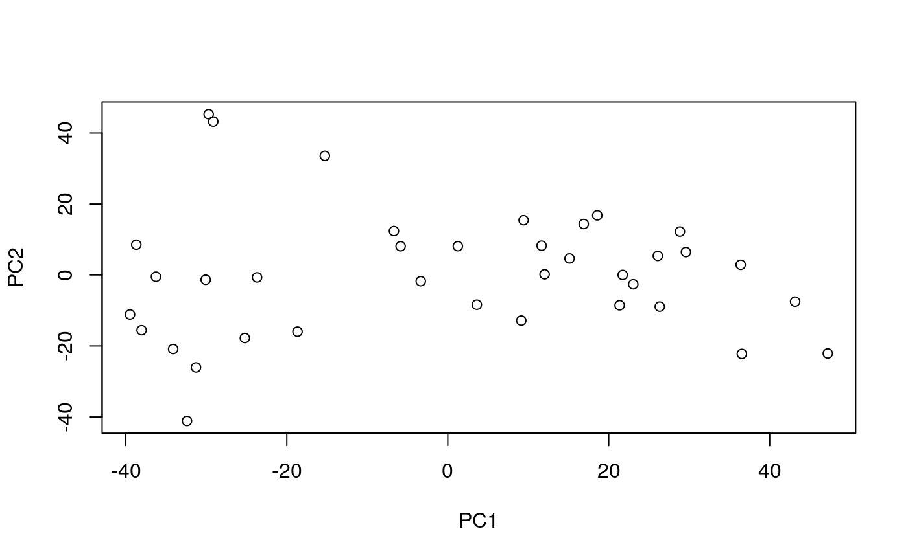
Each point is a sample. It is not immediately clear what the meaning of PC1 (or PC2) is and we see a wide spectrum of variation among samples. COCOA will help us understand the biological meaning of the PCs.
After the PCA, you might want to look at plots of the first few PCs and consider removing extreme outliers and rerunning the PCA since PCA can be affected by outliers, although this depends on your analysis. We note that COCOA will still work even if there are not distinct clusters of samples in your PCA plot and if you do not have known groups of samples. In this vignette, we will look at principal components 1-4 but this choice also depends on the context of your analysis.
We treat the PC scores as our “target variables” for this analysis and calculate the correlation between the ATAC-seq counts in each peak region and each PC.
PCsToAnnotate <- paste0("PC", 1:4) targetVar <- pcScores[, PCsToAnnotate] targetVar <- as.matrix(scale(targetVar, center=TRUE, scale=FALSE)) atacCor <- cor(t(brcaATACData1), targetVar, use = "pairwise.complete.obs") ## if the standard deviation of the ATAC-seq counts ## for a peak region across samples is 0, ## cor() will return NA, so manually set the correlation to 0 for these regions atacCor[is.na(atacCor)] <- 0
Score region sets
Let’s put our region sets into one object to simplify the next steps of the analysis.
## prepare data GRList <- GRangesList(esr1_chr1, gata3_chr1, nrf1_chr1, atf3_chr1) regionSetNames <- c("esr1_chr1", "gata3_chr1", "nrf1_chr1", "atf3_chr1")
Now let’s give each region set a score with aggregateSignalGRList() to quantify how much it is associated with each principal component:
regionSetScores <- aggregateSignalGRList(signal=atacCor, signalCoord=brcaATACCoord1, GRList=GRList, signalCol=PCsToAnnotate, scoringMetric="default") regionSetScores$regionSetName <- regionSetNames regionSetScores
## PC1 PC2 PC3 PC4 signalCoverage regionSetCoverage
## 1 0.4733108 0.2721045 0.2115626 0.1913905 941 616
## 2 0.5504208 0.2088963 0.2095857 0.1646549 365 343
## 3 0.2150414 0.3856798 0.2346568 0.2306659 164 158
## 4 0.2126329 0.3969492 0.2118229 0.2942610 106 101
## totalRegionNumber meanRegionSize sumProportionOverlap regionSetName
## 1 765 1196.2 332.23314 esr1_chr1
## 2 559 494.6 274.30255 gata3_chr1
## 3 163 273.4 150.78261 nrf1_chr1
## 4 116 283.4 94.34211 atf3_chr1Now we have a score for each region set that represents how much epigenetic variation in that region set is associated with each PC. Since we are using the absolute value of the correlation coefficient for each peak region to score our region sets, the possible region set scores range from 0 to 1, with 0 representing no correlation and 1 representing complete correlation. From our initial results, it appears that the chromatin accessibility in ER and GATA3 region sets is more highly associated with the PC scores than chromatin accessibility in the NRF1 and ATF3 region sets is. Out of PCs 1-4, ER and GATA3 have the highest scores for PC1. This result makes sense when we visualize ER status on the PCA plot. As you can see in the figure below, PC1 has some ability to separate samples based on ER status (even though ER status was not used when doing the PCA).
annoPCScores <- data.frame(pcScores, ER_status=as.factor(brcaMetadata[row.names(pcScores), "ER_status"])) ggplot(data = annoPCScores, mapping = aes(x=PC1, y=PC2, col=ER_status)) + geom_point() + ggtitle("PCA of a subset of chromatin accessibility data from breast cancer patients") + theme_classic()
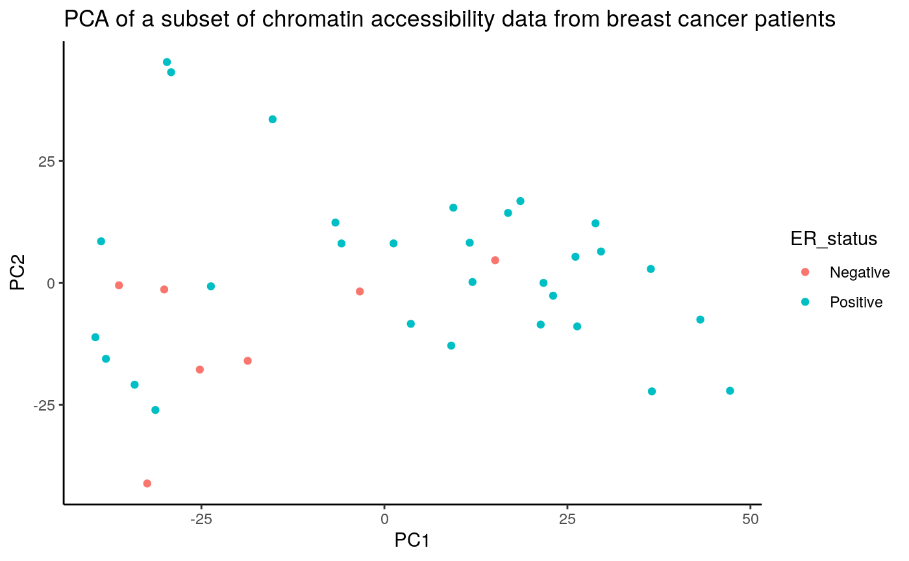 Given that some ER+ samples cluster with the ER- samples and vice versa, it is interesting to consider whether the clinical ER+/- designation is accurately representing the molecular phenotype of the samples although there are multiple potential reasons for this including tumor heterogeneity (this trend is still present when using the full ATAC-seq count matrix which includes additional samples).
As an easy way to visualize how the region sets are ranked for each PC, we can use rsScoreHeatmap:
rsScoreHeatmap(regionSetScores, signalCol=paste0("PC", 1:4), rsNameCol = "regionSetName", orderByCol = "PC1", column_title = "Region sets ordered by score for PC1")
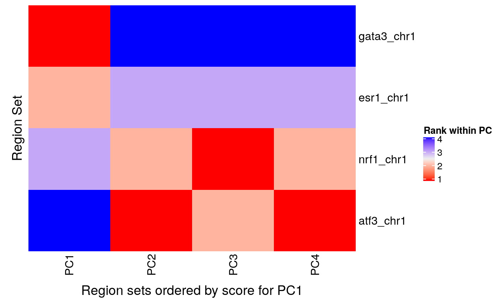
We can see that GATA3 had the highest score for PC 1 followed by ESR1 but PCs 2, 3, and 4 seem more associated with NRF1 and ATF3. If you want to arrange the heatmap by region set scores for another PC, just change the orderByCol parameter like so:
rsScoreHeatmap(regionSetScores, signalCol=paste0("PC", 1:4), rsNameCol = "regionSetName", orderByCol = "PC2", column_title = "Region sets ordered by score for PC2")
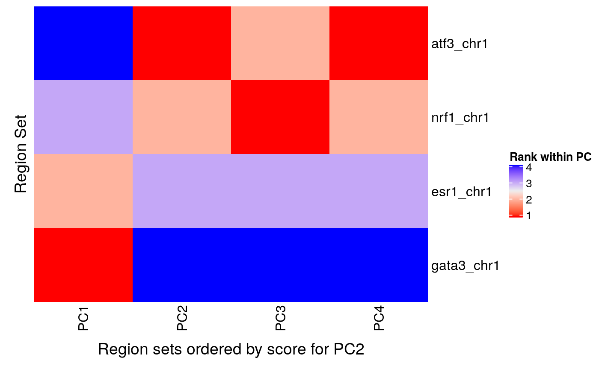
Estimating statistical significance
Now that we have a score for each region set for each PC, we can to get an idea of the statistical significance of these results. We will do this using a permutation test. The permutation test is computationally expensive and, in some cases, may not be needed since the COCOA scores by themselves might be enough to gain insight your data. However, if a p-value estimate is desired, the permutation test can return that.
Permutations
By shuffling the target variable and calculating COCOA scores, we can create a null distribution for each region set. The runCOCOA function does the two main COCOA steps: quantifying the variation and scoring the region sets. If the samples were in the correct order, runCOCOA would return the real COCOA scores but since we are giving a shuffled sample order (sampleOrder parameter), we will be correlating the epigenetic data with the shuffled sample target variables to create null distribution COCOA scores. We will be running five permutations for the vignette but many more should be done for a real analysis (probably at least a few hundred). We need to set the seed for reproducible results since we are doing random shuffling of the samples’ target variables.
set.seed(100) nPerm <- 5 permRSScores <- list() for (i in 1:nPerm) { # shuffling sample labels sampleOrder <- sample(1:nrow(targetVar), nrow(targetVar)) permRSScores[[i]] <- runCOCOA(sampleOrder=sampleOrder, genomicSignal=brcaATACData1, signalCoord=brcaATACCoord1, GRList=GRList, signalCol=PCsToAnnotate, targetVar=targetVar, variationMetric="cor") permRSScores[[i]]$regionSetName <- regionSetNames } permRSScores[1:3]
## [[1]]
## PC1 PC2 PC3 PC4 signalCoverage regionSetCoverage
## 1 0.09721972 0.1396480 0.1348588 0.1219613 941 616
## 2 0.09314555 0.1507263 0.1547897 0.1134118 365 343
## 3 0.09283675 0.1290389 0.1266369 0.1419866 164 158
## 4 0.10030621 0.1192332 0.1182332 0.1493053 106 101
## totalRegionNumber meanRegionSize sumProportionOverlap regionSetName
## 1 765 1196.2 332.23314 esr1_chr1
## 2 559 494.6 274.30255 gata3_chr1
## 3 163 273.4 150.78261 nrf1_chr1
## 4 116 283.4 94.34211 atf3_chr1
##
## [[2]]
## PC1 PC2 PC3 PC4 signalCoverage regionSetCoverage
## 1 0.1314155 0.10590148 0.1409278 0.1128442 941 616
## 2 0.1313343 0.09202298 0.1512843 0.1066047 365 343
## 3 0.1165477 0.08976365 0.1274251 0.1054424 164 158
## 4 0.1144538 0.09276836 0.1125837 0.1255014 106 101
## totalRegionNumber meanRegionSize sumProportionOverlap regionSetName
## 1 765 1196.2 332.23314 esr1_chr1
## 2 559 494.6 274.30255 gata3_chr1
## 3 163 273.4 150.78261 nrf1_chr1
## 4 116 283.4 94.34211 atf3_chr1
##
## [[3]]
## PC1 PC2 PC3 PC4 signalCoverage regionSetCoverage
## 1 0.11667736 0.1484255 0.1366243 0.1116443 941 616
## 2 0.10674830 0.1273453 0.1405393 0.1133954 365 343
## 3 0.08392767 0.2512065 0.1865221 0.1487804 164 158
## 4 0.08855589 0.2521387 0.2138149 0.1339035 106 101
## totalRegionNumber meanRegionSize sumProportionOverlap regionSetName
## 1 765 1196.2 332.23314 esr1_chr1
## 2 559 494.6 274.30255 gata3_chr1
## 3 163 273.4 150.78261 nrf1_chr1
## 4 116 283.4 94.34211 atf3_chr1We now have a list where each item is a result of aggregateSignalGRList. We have nPerm list items in permRSScores (only showing 3 above). We’ll reformat it so that we have a list where each item is a null distribution for a single region set:
nullDistList <- convertToFromNullDist(permRSScores) names(nullDistList) <- regionSetNames nullDistList
## $esr1_chr1
## PC1 PC2 PC3 PC4 signalCoverage regionSetCoverage
## 1 0.09721972 0.1396480 0.1348588 0.1219613 941 616
## 2 0.13141546 0.1059015 0.1409278 0.1128442 941 616
## 3 0.11667736 0.1484255 0.1366243 0.1116443 941 616
## 4 0.12698765 0.2049495 0.1854954 0.1208614 941 616
## 5 0.10299912 0.1304031 0.1453975 0.1338278 941 616
## totalRegionNumber meanRegionSize sumProportionOverlap regionSetName
## 1 765 1196.2 332.2331 esr1_chr1
## 2 765 1196.2 332.2331 esr1_chr1
## 3 765 1196.2 332.2331 esr1_chr1
## 4 765 1196.2 332.2331 esr1_chr1
## 5 765 1196.2 332.2331 esr1_chr1
##
## $gata3_chr1
## PC1 PC2 PC3 PC4 signalCoverage regionSetCoverage
## 1 0.09314555 0.15072633 0.1547897 0.1134118 365 343
## 2 0.13133431 0.09202298 0.1512843 0.1066047 365 343
## 3 0.10674830 0.12734532 0.1405393 0.1133954 365 343
## 4 0.11726849 0.23618739 0.1848542 0.1165232 365 343
## 5 0.09459582 0.13159145 0.1606941 0.1380019 365 343
## totalRegionNumber meanRegionSize sumProportionOverlap regionSetName
## 1 559 494.6 274.3025 gata3_chr1
## 2 559 494.6 274.3025 gata3_chr1
## 3 559 494.6 274.3025 gata3_chr1
## 4 559 494.6 274.3025 gata3_chr1
## 5 559 494.6 274.3025 gata3_chr1
##
## $nrf1_chr1
## PC1 PC2 PC3 PC4 signalCoverage regionSetCoverage
## 1 0.09283675 0.12903893 0.1266369 0.1419866 164 158
## 2 0.11654769 0.08976365 0.1274251 0.1054424 164 158
## 3 0.08392767 0.25120649 0.1865221 0.1487804 164 158
## 4 0.08219856 0.13710194 0.2051849 0.1223163 164 158
## 5 0.11921246 0.14651769 0.1668395 0.1590552 164 158
## totalRegionNumber meanRegionSize sumProportionOverlap regionSetName
## 1 163 273.4 150.7826 nrf1_chr1
## 2 163 273.4 150.7826 nrf1_chr1
## 3 163 273.4 150.7826 nrf1_chr1
## 4 163 273.4 150.7826 nrf1_chr1
## 5 163 273.4 150.7826 nrf1_chr1
##
## $atf3_chr1
## PC1 PC2 PC3 PC4 signalCoverage regionSetCoverage
## 1 0.10030621 0.11923322 0.1182332 0.1493053 106 101
## 2 0.11445380 0.09276836 0.1125837 0.1255014 106 101
## 3 0.08855589 0.25213866 0.2138149 0.1339035 106 101
## 4 0.09042103 0.14741610 0.2387184 0.1238157 106 101
## 5 0.12244747 0.10505294 0.1569258 0.1520899 106 101
## totalRegionNumber meanRegionSize sumProportionOverlap regionSetName
## 1 116 283.4 94.34211 atf3_chr1
## 2 116 283.4 94.34211 atf3_chr1
## 3 116 283.4 94.34211 atf3_chr1
## 4 116 283.4 94.34211 atf3_chr1
## 5 116 283.4 94.34211 atf3_chr1We have four null distributions, one for each region set in GRList.
Fit gamma distribution to null distributions and get p-values
To reduce the number of permutations (and the run time for COCOA), we will approximate each null distribution with a gamma distribution (Winkler et al., 2016). After fitting the gamma distribution to each null distribution, we can use the gamma distributions to get p-values. We fit the gamma distribution and get the p-value with getGammaPVal.
## p-values based on fitted gamma distributions gPValDF <- getGammaPVal(rsScores = regionSetScores, nullDistList = nullDistList, signalCol = PCsToAnnotate, method = "mme", realScoreInDist = TRUE) gPValDF <- cbind(gPValDF, regionSetScores[, colnames(regionSetScores)[!(colnames(regionSetScores) %in% PCsToAnnotate)]]) gPValDF <- cbind(gPValDF, regionSetNames) gPValDF
## PC1 PC2 PC3 PC4 signalCoverage regionSetCoverage
## 1 0.03672274 0.04462305 0.04481812 0.02465793 941 616
## 2 0.03859849 0.14937226 0.04124595 0.03345237 365 343
## 3 0.03272404 0.04602279 0.07276579 0.03462128 164 158
## 4 0.03044979 0.04684720 0.21451410 0.02836991 106 101
## totalRegionNumber meanRegionSize sumProportionOverlap regionSetName
## 1 765 1196.2 332.23314 esr1_chr1
## 2 559 494.6 274.30255 gata3_chr1
## 3 163 273.4 150.78261 nrf1_chr1
## 4 116 283.4 94.34211 atf3_chr1
## regionSetNames
## 1 esr1_chr1
## 2 gata3_chr1
## 3 nrf1_chr1
## 4 atf3_chr1Fitting a gamma distribution with only 5 permutations does not really make sense but we do it here just to illustrate function usage. You can increase the number of permutations and see how that will affect the p-values. Also, keep in mind that a low p-value does not necessarily indicate a large effect size. The actual COCOA scores can be used as an indicator of effect size.
After getting p-values, we also want to do multiple testing correction to account for the number of region sets in our region set database (not shown here but see ?p.adjust).
We can also use the null distributions to directly calculate empirical p-values:
getPermStat(rsScores = regionSetScores, nullDistList = nullDistList, signalCol = PCsToAnnotate)
## PC1 PC2 PC3 PC4 signalCoverage regionSetCoverage totalRegionNumber
## 1: 0 0.0 0.0 0 941 616 765
## 2: 0 0.2 0.0 0 365 343 559
## 3: 0 0.0 0.0 0 164 158 163
## 4: 0 0.0 0.4 0 106 101 116
## meanRegionSize sumProportionOverlap regionSetName
## 1: 1196.2 332.23314 esr1_chr1
## 2: 494.6 274.30255 gata3_chr1
## 3: 273.4 150.78261 nrf1_chr1
## 4: 283.4 94.34211 atf3_chr1An empirical p-value of zero is returned when the real region set score was more extreme than any scores in its null distribution. What this really suggests is that the true p-value is less than ( 1/nPerm ) although it is unclear how much less.
The empirical p-values are limited by the number of permutations done. When multiple testing correction is done to correct for testing many region sets in a large region set database, the empirical test normally cannot achieve significant p-values with a reasonable number of permutations. For that reason, the gamma distribution approximation is recommended to allow the possibility of lower p-values.
Further understanding the results (visualization)
We can further understand the variability in these region sets in several ways:
- Look at whether variability is specific to the regions of interest compared to the genome around these regions.
- Visualize the epigenetic signal in these regions and whether it correlates with the target variable.
- Look at the feature contribution scores (e.g. correlation coefficients) in each region of a given region set to see whether all regions have high contribution scores or just a subset the regions. Also we can see if the same regions have high contribution scores for multiple target variables.
To demonstrate these techniques, we’ll be using results from the unsupervised analysis above.
Specificity of variation to the regions of interest
We can see whether variability associated with the target variable is specific to the region of interest by comparing the region of interest to the surrounding genome. To do this, we will calculate the average feature contribution scores (FCS) of a wide area surrounding the regions of interest (14 kb centered on each region set region).
wideGRList <- lapply(GRList, resize, width=14000, fix="center") fcsProfile <- lapply(wideGRList, function(x) getMetaRegionProfile(signal=atacCor, signalCoord=brcaATACCoord1, regionSet=x, signalCol=PCsToAnnotate, binNum=21))
We will normalize the result for each PC so we can better compare them. Here we normalize by subtracting the mean absolute FCS of all epigenetic features for each PC from the region set profiles for the corresponding PC. Then we get the plot scale so we can easily compare the different profiles. These normalization steps are helpful for comparing the meta-region profiles but not necessarily required so it’s not essential that you understand the below code.
## average FCS from each PC to normalize so PCs can be compared with each other avFCS <- apply(X=atacCor[, PCsToAnnotate], MARGIN=2, FUN=function(x) mean(abs(x))) ## normalize fcsProfile <- lapply(fcsProfile, FUN=function(x) as.data.frame(mapply(FUN = function(y, z) x[, y] - z, y=PCsToAnnotate, z=avFCS))) binID = 1:nrow(fcsProfile[[1]]) fcsProfile <- lapply(fcsProfile, FUN=function(x) cbind(binID, x)) ## for the plot scale maxVal <- max(sapply(fcsProfile, FUN=function(x) max(x[, PCsToAnnotate]))) minVal <- min(sapply(fcsProfile, FUN=function(x) min(x[, PCsToAnnotate]))) ## convert to long format for plots fcsProfile <- lapply(X=fcsProfile, FUN=function(x) tidyr::gather(data=x, key="PC", value="meanFCS", PCsToAnnotate)) fcsProfile <- lapply(fcsProfile, function(x){x$PC <- factor(x$PC, levels=PCsToAnnotate); return(x)})
Let’s look at the plots!
wrapper <- function(x, ...) paste(strwrap(x, ...), collapse="\n") profilePList <- list() for (i in seq_along(fcsProfile)) { thisRS <- fcsProfile[[i]] profilePList[[i]] <- ggplot(data=thisRS, mapping=aes(x=binID , y=meanFCS)) + geom_line() + ylim(c(minVal, maxVal)) + facet_wrap(facets="PC") + ggtitle(label=wrapper(regionSetNames[i], width=30)) + xlab("Genome around region set, 14 kb") + ylab("Normalized mean FCS") + theme(panel.grid.major.x=element_blank(), panel.grid.minor.x=element_blank(), axis.text.x=element_blank(), axis.ticks.x=element_blank()) profilePList[[i]] } profilePList[[1]]
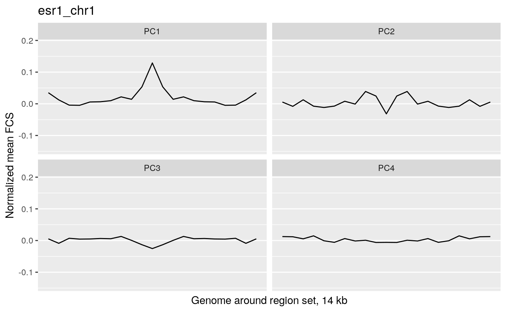
profilePList[[2]]
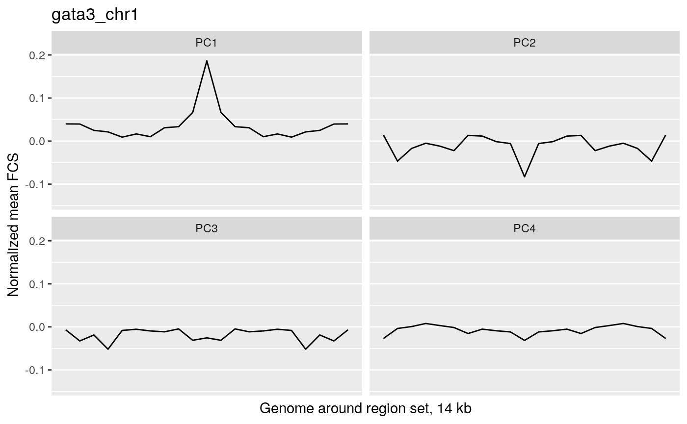
profilePList[[3]]
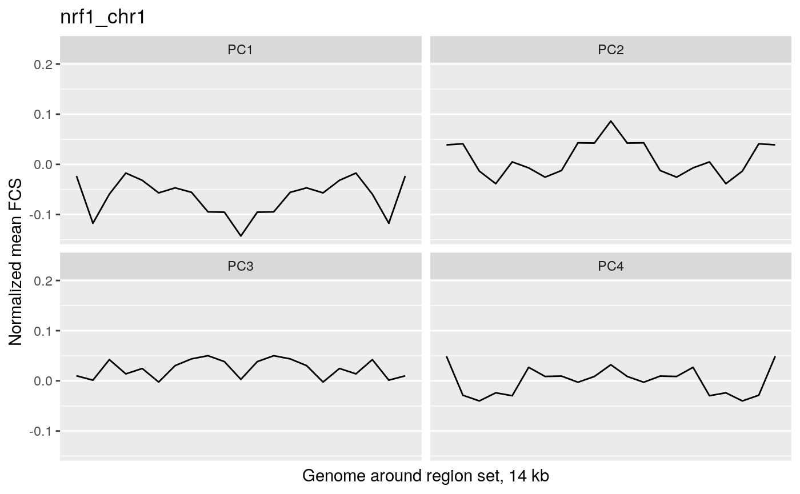
profilePList[[4]]
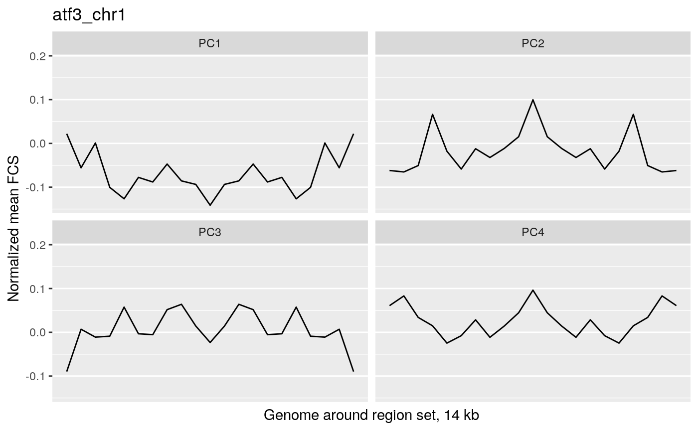
These plots show the average magnitude of the feature contribution scores in the genome around and including the regions of interest. The FCS for an input epigenetic feature, indicates how much that input feature varies in the same direction as the target variable (here, the PC scores). If you used correlation or covariation to get the feature contribution scores, a peak in the middle of the profile indicates that there is increased covariation in the regions of interest compared to the surrounding genome. It suggests that those regions are changing in a coordinated way whereas the surrounding genome is not changing in a coordinated way to the same extent. A peak suggests that the variation in the target variable (the PCs) may be somehow specifically related to the region set although it is not clear whether the region set is causally linked to the variation or just affected by other things that are causing the variation associated with the target variable. Some region sets may have an increased FCS but no peak, for example, some histone modification region sets like H3K27me3 or H3K9me3. This doesn’t necessarily mean these regions are not relevant. It could just mean that there is variability in larger blocks of the genome around these histone modifications (the expanded regions might also overlap with each other). For details on how the meta-region profile was created, check out the section about it in the “Method details” section of this vignette or see the docs for getMetaRegionProfile with ?COCOA::getMetaRegionProfile.
These plots show that ESR1 and GATA3 binding regions demonstrate higher covariation along the PC1 axis than the surrounding genome does (because they have a peak in the middle) while NRF1 and ATF3 do not. So for example, if you line up samples by their PC1 score, then as you go from low to high PC1 score, the chromatin accessibility of ESR1 binding regions will generally change in a coordinated way across samples (PCs are based on covariation) but the chromatin accessibility in the surrounding genome would not change as much or would not change in a coordinated way. The results from our four region sets suggest that ESR1 and GATA3 regions specifically contribute to the variation along the PC 1, helping us understand the biological meaning of the variation captured by that PC: at least in part related to estrogen receptor.
The raw data
If a region set has a high score for a certain target variable, we would expect that the epigenetic signal in at least some of those regions would correlate with the target variable. In other words, as you go from a high value of the target variable to a low value of the target variable, in this case as you go along the PC axis, the epigenetic signal will either go up or down. Let’s look at the epigenetic signal in ESR1 regions. In the following plot, each column is an ATAC-seq peak region that overlaps in an ESR1 region and each row is a patient. Patients are ordered by their PC score for PC1.
signalAlongAxis(genomicSignal=brcaATACData1, signalCoord=brcaATACCoord1, regionSet=esr1_chr1, sampleScores=pcScores, orderByCol="PC1", cluster_columns=TRUE, column_title = "Individual ATAC-seq region", name = "Normalized signal in ATAC-seq regions", show_row_names=FALSE, show_column_names=FALSE)
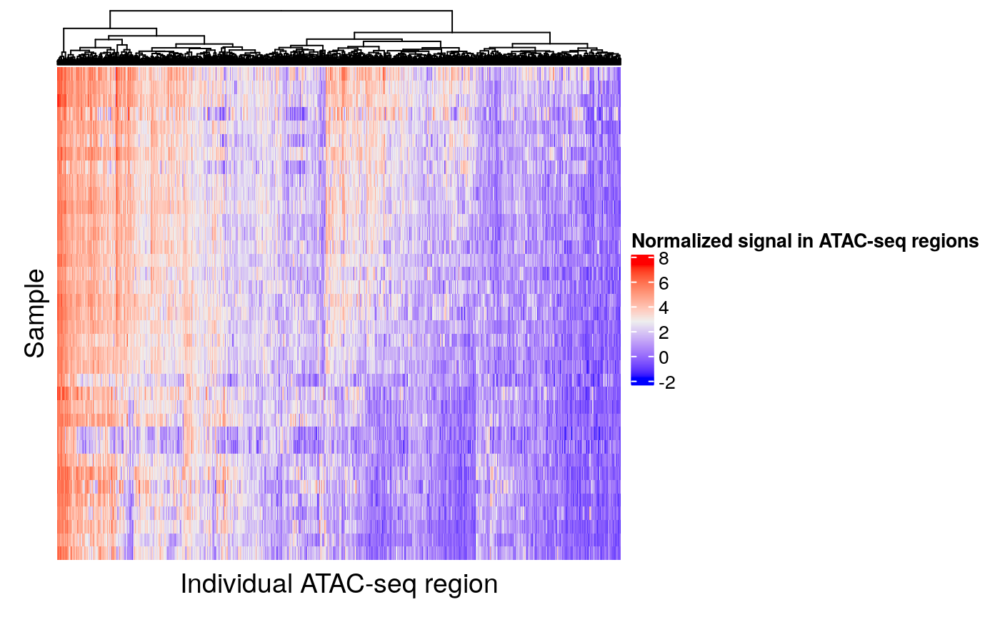
Looking at the raw data confirms that chromatin accessibility is in fact varying along the PC axis. It appears that some but not all peak regions vary greatly along the PC axis. The peak regions that show high variation along the PC axis are the ones that contribute to the ESR1 region set being ranked highly in our analysis.
Now let’s look at one of the region sets, NRF1, that had a lower score for PC1:
signalAlongAxis(genomicSignal=brcaATACData1, signalCoord=brcaATACCoord1, regionSet=nrf1_chr1, sampleScores=pcScores, orderByCol="PC1", cluster_columns=TRUE, column_title = "Individual ATAC-seq region", name = "Normalized signal in ATAC-seq regions", show_row_names=FALSE, show_column_names=FALSE)
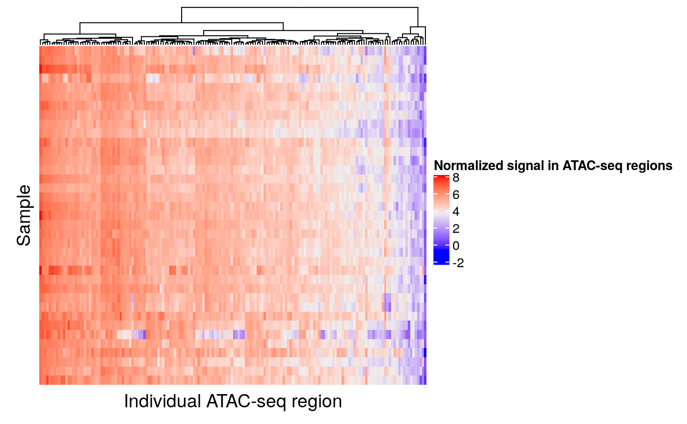
When patients are ordered according to PC1 score, we can see that there is less covariation of the epigenetic signal in these regions compared to the ESR1 regions. Therefore, it is not surprising that the NRF1 region set had a low score for this PC.
Since COCOA ranks region sets based on their relative scores in comparison to other region sets tested, there will always be a region set with a best score. The permutation test gives an idea of statistical significance but not necessarily effect size. The actual COCOA scores give an idea of the magnitude of variation of a region set but it can be a good idea to visually check the raw genomic signal in your top region sets to see how great the extent of variation is along the PC.
Feature contribution scores of individual regions
This plot can help you learn more about the contribution of individual region set regions to the region set score for each target variable. For example, if the estrogen receptor region set was associated with PCs 1, 3, and 4, we might wonder whether the same regions are causing the association with these PCs or whether different regions are associated with each PC. To do this, we will first calculate the average absolute feature contribution score for each region in a region set (obtained by averaging a given target variable’s FCS for epigenetic features that overlap that region). Then we can use the distribution of FCS for each target variable to convert each region’s FCS to a percentile to see how extreme/high that region is for each target variable. Let’s look at the plot for estrogen receptor:
regionQuantileByTargetVar(signal = atacCor, signalCoord = brcaATACCoord1, regionSet = esr1_chr1, rsName = "Estrogen receptor (chr1)", signalCol=paste0("PC", 1:4), maxRegionsToPlot = 8000, cluster_rows = TRUE, cluster_columns = FALSE, column_title = rsName, name = "Percentile of feature contribution scores in PC")

A high FCS indicates that a region is important for a PC. We can see that not many regions have high FCS for all four PCs. Overall, PC1 has the highest FCS, consistent with our meta-region profiles (peak for PC1).
For contrast, we can look at the regions of NRF1:
regionQuantileByTargetVar(signal = atacCor, signalCoord = brcaATACCoord1, regionSet = nrf1_chr1, rsName = "NRF1 (chr1)", signalCol=paste0("PC", 1:4), maxRegionsToPlot = 8000, cluster_rows = TRUE, cluster_columns = FALSE, column_title = rsName, name = "Percentile of feature contribution scores in PC")
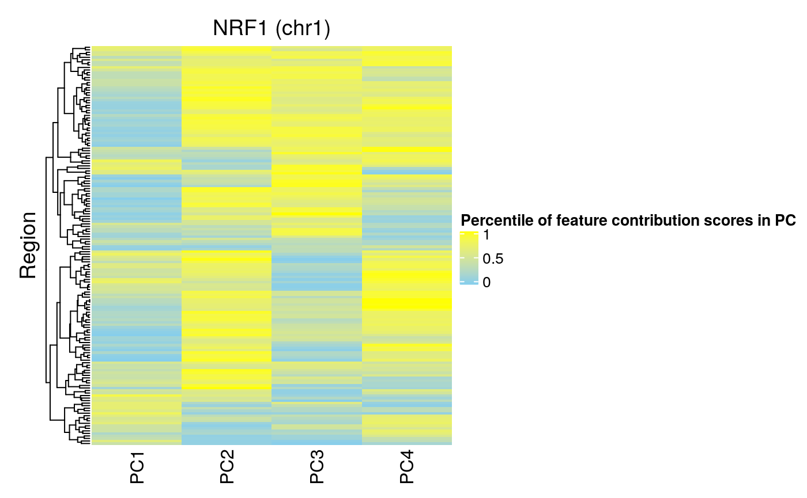
We can see that fewer regions in the NRF1 region set have high FCS for PC 1. This is consistent with this region set being ranked lower by COCOA for that PC.
Additional details
Method details
The overall conceptual steps are described in the Basic workflow section. In this section, we give more details about some of the individual parts of that workflow.
Region set database
COCOA uses a database of region sets to gain biological insight into sources of variability in your data. A region set is a set of genomic regions that share a biological annotation. This includes transcription factor (TF) binding regions (e.g. from ChIP-seq), regions with a certain histone modification (e.g. ChIP-seq) or chromatin accessibility regions (e.g. DNase/ATAC-seq). Most of these region sets are from experimental data but don’t necessarily have to be. For instance, you could use predicted TF binding regions based on the TF motif. The big picture goal of using a region set database is to connect variation between samples to an interpretable biological meaning: the known annotation of a region set. For each target variable (phenotype or latent factor), COCOA will give a score to each region set that quantifies how much that region set is associated with the inter-sample variation of that target variable.
COCOA should be done with many region sets (i.e. hundreds or > 1000). A region set can be a simple “.bed”" file with three columns containing the genomic locations of the regions: chr (for chromosome), start, and end. In R, this data can be represented as a data.frame or as a GRanges object. Publicly available collections of region sets can be found online (e.g. http://databio.org/regiondb) and region sets can be accessed through Bioconductor packages (e.g. LOLA and AnnotationHub). The region sets must be from the same reference genome as your sample data (although you could use the liftOver tool to convert from one genome version to another). The region sets can come from anywhere so if you experimentally or computationally generate your own region sets, you can just include those with the others when running the COCOA analysis.
We’ll show some sample code for loading a LOLA region set database (unevaluated). Loading the database may take a few minutes:
library(LOLA) ## reading in the region sets ## load LOLA database lolaPath <- paste0("path/to/LOLACore/genomeVersion/") regionSetDB <- loadRegionDB(lolaPath) ## metadata about the region sets loRegionAnno <- regionSetDB$regionAnno lolaCoreRegionAnno <- loRegionAnno collections <- c("cistrome_cistrome", "cistrome_epigenome", "codex", "encode_segmentation", "encode_tfbs", "ucsc_features") collectionInd <- lolaCoreRegionAnno$collection %in% collections lolaCoreRegionAnno <- lolaCoreRegionAnno[collectionInd, ] regionSetName <- lolaCoreRegionAnno$filename regionSetDescription <- lolaCoreRegionAnno$description ## the actual region sets GRList <- GRangesList(regionSetDB$regionGRL[collectionInd]) ## since we have what we need, we can delete this to free up memory rm("regionSetDB")
This GRList object can be used with COCOA as the region set database, along with any other region sets you may have from other sources.
Aggregating info from individual features
Since differences between samples in individual epigenetic features may be hard to interpret, COCOA uses region sets to aggregate nucleotide/region level info into a more condensed, interpretable form. As mentioned in the vignette, each epigenetic feature has a “feature contribution score” (FCS) for a given target variable and the magnitude of the FCS represents how much that feature contributes to that target variable. Also, each original epigenetic feature is associated with a genomic coordinate or a region. COCOA will use this information to give each region set in the region set database a score for each target variable. For a given target variable-region set combination (for example PC1 and the region set esr1_chr1), we first identify all the epigenetic features that overlap with the region set. Then the scoring of the region set depends on the scoring metric chosen. The “regionMean” method is described here although the other methods are described in function docs. For the “regionMean” method that is used for single base data like DNA methylation, we identify the FCS for the features that overlap the region set and average the (absolute) FCS by region (average FCS in each region to get one value per region of the region set). Then we average the region values to get a single average for that region set which is its score. We repeat this calculation for all target variable-region set combinations. Now for a given target variable, we can rank the region sets by their score/FCS average to see which region sets are most associated with that target variable (higher FCS average means a greater association with the target variable). The biological annotation of the top ranked region sets for the target variable can help you understand variation among your samples.
Making a “meta-region” profile
A “meta-region” profile is a summary of the FCS in the genome in and around the regions of a region set. This is created with the getMetaRegionProfile function. The calculations are similar to those of aggregateSignalGRList with a few major differences. Instead of using the region set as is, we will expand each region in the region set on both sides so we can also look at the surrounding genome. We will then split each region into the same number of bins (of approximately equal size). Then we average (the absolute value of) all FCS that overlap a bin to get a single average FCS for each bin. For region-based epigenetic data like ATAC-seq, this average can be a weighted average based on how much each ATAC-seq region overlaps each region set region. Then (for both single base and region-based data) we combine information from all the regions by averaging the corresponding bins from the different regions (all bin1’s averaged together, all bin2’s averaged together, etc.). Finally, we average the profile symmetrically over the center (the first bin becomes the average of the first and last bin, the second bin becomes the average of the second and second to last bin, etc.). We do this because the orientation of the regions in the genome is arbitrary: we did not use any strand information or relate the regions to any directional information. The “meta-region” profile gives a summary in a single profile of all the regions in a region set and allows you to compare the regions to the surrounding genome. See ?getMetaRegionProfile for more details and options.
Q and A
- Where can I get more information about COCOA?
Be on the lookout for a preprint/paper about COCOA! As of October 2019, the best ways to get COCOA info are the vignettes and reference manual on the Bioconductor website. You can also check out ongoing development or report an issue with COCOA on Github.
- What data types can COCOA be used with?
So far, COCOA has been validated on single base pair resolution DNA methylation data, chromatin accessibility data, and a multi-omics analysis that included DNA methylation. Theoretically, COCOA could work with any type of genomic coordinate-based data: data where you have a genomic coordinate or range and an associated value. This could include histone modification data, single nucleotide polymorphism/mutation data, copy number variation etc. although COCOA would probably work better for data where smaller regions or single bases are measured.
- Can COCOA be used with other dimensionality reduction techniques such as t-SNE?
Short answer for t-SNE: no. In general though, it depends. COCOA must have a score for each original dimension that quantifies how much it contributes to the new dimension. Since t-SNE maps the original dimensions to new dimensions in a nonlinear way, the mappings of the original dimensions to the new dimensions are not comparable to each other and cannot be aggregated into a single score for a region set in a uniform way.
- What does the name COCOA mean?
The method is called Coordinate Covariation Analysis because it looks at covariation/correlation of individual signals/features at genomic coordinates and how those features relate to a target variable. COCOA annotates the covariation/correlation of individual genomic features with region sets in order to gain insight into variation between samples.
Related references
ATACseq data source: Corces MR, Granja JM, Shams S, et al. The chromatin accessibility landscape of primary human cancers. Science. 2018;362(6413):eaav1898. doi:10.1126/science.aav1898
This paper involves gene sets instead of region sets but provided some inspiration for our method: Frost HR, Li Z, Moore JH. Principal component gene set enrichment (PCGSE). BioData Mining. 2015;8:25. doi:10.1186/s13040-015-0059-z.
Gamma p-value approximation for permutation tests: Winkler AM, Ridgway GR, Douaud G, Nichols TE, Smith SM. Faster permutation inference in brain imaging. Neuroimage. 2016;141:502-516. doi:10.1016/j.neuroimage.2016.05.068
University of Virginia↩︎